Code
# Set to true if L metrics
recalculate_distance_matrices <- FALSE
rerun_simulations <- FALSE
export_and_save_every_model <- FALSE# Set to true if L metrics
recalculate_distance_matrices <- FALSE
rerun_simulations <- FALSE
export_and_save_every_model <- FALSE#options(device = svglite::svglite)
library(svglite)
library(tidyverse)
library(dagitty)
library(tidygraph)
library(scales)
library(patchwork)
library(ggdist)
library(ggraph)source("gcm_helpers.R")
source("dagitty_tidygraph_translators.R")We will use curvy uppercase (\(\mathcal{M,G,V,E}\)) script for sets across all the models, \(\mathbf{BOLD}\) uppercase for sets, and \(U,P,P,E,R\) case standard for instances in the models. Lowercase like \(v\) will be reserved for imagining actual values (so a node taking on a particular value).
The models are indexed as \(\mathcal{M}=\{M_1,M_2,\dots,M_8 \}\) with their corresponding graphical form as \(\mathcal{G}=\{G_1,G_2,\dots,G_8 \}\), and each graphical model \(G_k\) comprises of a set of vertices \(\mathbf{V}_{k}\) and edges \(\mathbf{E}_{k}\), so \(G_k=\langle\mathbf{V}_{k}, \mathbf{E}_{k}\rangle\), with the set of all nodes being \(\mathcal{V}\) edges being \(\mathcal{E}\). \(E_{ij}=V_i \rightarrow V_j\) indicates an edge between two nodes, and we may use \(X=V_i,Y=V_j,Z_k \in \mathbf{V}\) to streamline notation when subscripts are getting messy. If two nodes are connected through a mediated path, such as \(V_i \rightarrow \dots \rightarrow V_j\) then we write \(\mathrm{De}_{ij}=V_i \rightsquigarrow V_j\) or \(V_i \in \mathrm{an}(V_j)\). To specify model context for ancestors, descendants and mediated parts we subscript the model: \(V_i \in \mathrm{an}_{G_k}(V_j)\) or \(V_i \rightsquigarrow _{G_k} V_j\). Nodes \(V_i\) are indexed over all models (so across \(\mathcal{V}\)), but if we want to talk about \(V_i\) as it stands in \(G_k\) we would use \(V_{i:G_k}\), and likewise for an edge \(E_{ij:G_k}\) residing in the context of model \(G_k\).
Alternate notation for parents: \(\{\mathrm{pa}_X \}\)
To describe some of the features of DAGs we will examine the set of independence relationships in the models as well.
We will also be applying coarsening functions to create cluster DAGs. A typical coarsening functions \(\varphi\) is applied to the graph, and within it all the nodes and edges. So \(\varphi (G_{k})=\varphi G_{k}=\langle\varphi\mathbf{V}_{k},\varphi\mathbf{E}_{k}\rangle=\langle[\mathbf{V}_k]_{\varphi},[\mathbf{E_k}]_{\varphi}\rangle\), which will also refer to as a new cluster model \(G^C_{k}=\varphi G_k=\langle\mathbf{V}^{C}_{k},\mathbf{E}^{C}_{k}\rangle\) for slightly cleaner notation, and including the \(C\) for cluster. The coarsening function \(\varphi\) induces an equivalence relation \(\sim _\varphi\) on \(\mathbf{V}_{k}\) where \(V_i \sim_\varphi V_j\) iff \(\varphi (V_i) = \varphi (V_j)\), i.e. both nodes map to the same cluster. In this cluster model we would find \(\varphi\mathbf{V}_{k}\). The coarsened / cluster nodes would be \([V_{i}]_{\varphi}=\{V_j \in \mathcal{V}:V_j \sim_{\varphi} V_i\}\), the equivalence class of nodes \([V_i]_{\varphi}\), or simply \([V_i]\) if \(\varphi\) is clear from the context. These clusters can be relabled and reindexed to \(C_a = [V_i]_{\varphi}\) for legibility. The edges in \(\varphi G_{k}=G_{k}^{C}\) are then \(E^{\varphi}_{[i][j]}=[V_i]\rightarrow [V_j]=C_a \rightarrow C_b=E^{C}_{ab}\). Choosing to use the \(C\) or \(\varphi\) syntax depends on the context - are we mainly discussing the cluster model \(G_k^C\) or the processes of coarsening \(\varphi G_{k}\)? There is also the causal degradation produced by \(\varphi\), which we denote as \(\mathrm{deg}_\varphi\) generally, \(\mathrm{deg}_\varphi({G_k})\) as applied to a particular model, and \({\mathcal{L}_i}\text{-}\mathrm{deg}_\varphi(G_k)\) to specify a particular level of the causal hierarchy, \(\mathcal{L}_i:i\in \{1,2,3\}\).
A measure of causal consistency is also computed, but this is between two models, rather than under the process of a clustering. This will be denoted as \({\mathcal{L}_{i}}\text{-}\mathrm{d}_{xy}\) or \({\mathcal{L}_{i}}\text{-}\mathrm{d}\) if symmetric, so where \({\mathcal{L}_{i}}\text{-}\mathrm{d}_{xy}(G_a,G_b)={\mathcal{L}_{i}}\text{-}\operatorname{d}_{xy}(G_b,G_a)\).
Thought: There is also the graph surgery notation \(G_{x\rightarrow y}\) for the adjusted graph for estimating \(P(y|\operatorname{do}(x))\), might be nicer even as \(G_{y \leftarrow x}\). This works nicer having lowercase \(x,y\) as the nodes, rather than the \(V_i\) notation…but it can still be \(G_{X \rightarrow Y}\) or \(G_{v_{i}\rightarrow v_{j}}\).
Notation for adjustment sets? Things like that?
The paper above with the snip from uses a hard (fix a value) intervention and a soft (fix a set of values) / stochastic intervention with \(\mathcal{I}_X\).
Good paper on projections and preservation of causal quantities under them: https://www-sciencedirect-com.ezproxy.lib.uts.edu.au/science/article/pii/S0888613X24000951
Supposing we have some function \(\operatorname{d}(x,y) \rightarrow R\)
hclust.| Causal level | Example Statements; \(\gamma\) |
|---|---|
| \(\mathcal{L}_0\) : Description / bounding | List of variables (the vocabulary) |
| \(\mathcal{L}_1\) : Association / Seeing | Implied conditional independencies; d-separation |
| \(\mathcal{L}_2\) : Intervention / Doing | Adjustment sets; graph operations under interventions |
| \(\mathcal{L}_3\) : Counterfactual / Imagining | Joint distribution under manipulation of variables |
There is a notion of causal consistency based on Pearl’s causal hierarchy. Two models, \(\mathcal{M}_a\) and \(\mathcal{M}_b\) with a shared vocabulary \(\mathcal{S}=\mathbf{V}_a\cap \mathbf{V}_b\), are said to be \(\mathcal{L}_i\text{-consistent}\) if they agree on all statements for that given level (Schooltink?). The challenge then is when a range of models share a different number of variables. Two models can be vacuously consistent by \(\mathcal{S}=\varnothing\). As such we can define an \(\mathcal{L}_0\) level with an abuse of the notation to be simply the collection of variables.
As consistency is described as agreement between sets of statements we can use the Jaccard index between two sets of an agreed collection of \(\mathcal{L}_i\) statemnts to measure the consistency, and the Jaccard distance to create a distance function between the two models. These are built from the principles articulated in Schooltink et. al, were we are looking at some measure of the preservation of all the \(\mathcal{L}_i\) algebraic statements about the GCM. These measures are not exhaustive, but rather choose the implied conditional independence relationships for \(\mathcal{L}_1\) and the sets of adjustment sets for \(\mathcal{L}_2\).
Let \(\gamma_{i}\) be a claim at \(\mathcal{L}_i\) level, and \(\Gamma_{i}(G)=\{\gamma_i | \gamma_i \text{ is true within }G\}\), so the set of all true claims (of a given type) for the model \(G\). Those statements may be about any nodes in \(G\), so if we want to talk only about the statements belonging to the shared set of nodes \(\mathcal{S}\) then we write \(\Gamma_{i}(G){[\mathcal{S}]}=\hat{\Gamma}_{i}(G)\). Depending on the level of causality the statement could be more or less strict about what is included. For instance we could look at d-separation on \(\mathcal{L}_1\) statements of the form \(\gamma=\langle x \perp_{d} y \ | \ z \rangle _{G}\) . There is a hard form of inclusion in \(\hat{\Gamma_{i}}\) where \(x,y,\mathbf{z} \in \mathcal{S}\) and a softer form of inclusion where \(x,y \in \mathcal{S}; \exists \mathbf{z} \in \mathbf{V}_G\). The former asks if \(x,y \in \mathcal{S}\) are d-separated by some set of variables also in the shared vocabulary \(\mathcal{S}\), where as the latter asks if \(x,y \in \mathcal{S}\) are able to be d-separated by some set of variables in \(G\).
Then we define:
\[\operatorname{d}_{\mathcal{L}_i}(G,H)=1 - J_{\mathcal{L}_i}; J_{\mathcal{L}_i}=\frac{|\hat{\Gamma}_i(G) \ \cap \ \hat{\Gamma}_{i}(H)|}{|\hat{\Gamma}_i(G) \ \cup \ \hat{\Gamma}_{i}(H)|}\]
Or, using the symmetric difference operator, and using restriction notation, so \(\Gamma\!\upharpoonright\!S\) are the statements restricted to a set S.
\[\operatorname{d}_{\mathcal{L}_i}(G,H)=\frac{|\ (\Gamma_{i}(G) \ \Delta \ {\Gamma}_{i}(H))\!\upharpoonright\!\mathcal{S}_{GH}\ | }{|\ ({\Gamma}_i(G) \ \cup \ {\Gamma}_{i}(H))\!\upharpoonright\!\mathcal{S}_{GH}\ |}\]
Or, we could look at all the statements, without the \(\mathcal{S}\), and let \(\mathcal{L}_0\) carry that load:
\[\operatorname{d}_{\mathcal{L}_i}(G,H)=\frac{|{\Gamma}_i(G) \ \Delta \ {\Gamma}_{i}(H)|}{|{\Gamma}_i(G) \ \cup \ {\Gamma}_{i}(H)|}\]
It might be easier to use the latent projection notation. A latent projection of a graph \(G\) onto a set of nodes \(\mathcal{S}\) is \(\pi_{\mathcal{S}}(G)\) and preserves \(\mathcal{L}_{1,2}\) statements. L1 is Verma and Pearls theorem, for disjoint X, Y, Z, X | Y | Z is d-separated in G iff m-separated in \(\pi_{\mathcal{S}}(G)\). So \(\Gamma_{1}(G)\upharpoonright \mathcal{S}\), the statements restricted to S, is \(\pi_{\mathcal{S}}(G)\) exactly (get ref) - well so some claim. However, that has not proven to be the case with the implementation here. Using the restrction to a set of statements instead of the projection method.
Key to the implementation is the choice of what statement to include in \(\Gamma_i\), and how then to restrict this to the possible shared statements between the models \(\hat{\Gamma}_{i}\).
A similar use of \(\Gamma_{i}\) can be used to examine the possible loss of \(\mathcal{L}_i\) claims under some coarsening of graph through the clustering of nodes. One way this can happen when the coarsening divides the adjustment sets of some pair of variables into different clusters. Informally this degradation measure counts the proportion of \(\mathcal{L}_i\) claims in the CDAG that have no potential surrogate claim in the fine grained DAG. More formally, we define:
\[\varphi\text{-}\operatorname{deg}_{\mathcal{L}_i}(G)=\frac{|\ \{ [\gamma]_{\varphi} \in \Gamma_{i}(\varphi G): \nexists \ \eta \in \Gamma_i(G) \text{ s.t. } \varphi(\eta) = [\gamma]_{\varphi} \}\ |}{|\ \varphi\Gamma_{i}(G) \cup \Gamma_{i}(\varphi G) |}\]
L0_d <- L0_dissimilarity_vocab
L1_d <- partial(
L1_dissimilarity_ci,
max_cond = 5)
L2_d <- partial(
L2_dissimilarity_adj_set,
adj_type = "all")To articulate some of the theory and the new metrics.
dagc1 <- dagitty::dagitty(
"dag{
X -> Y;
X <- Z -> Y
}"
)
dagc1w <- dagitty::dagitty(
"dag{
X -> Y;
X <- Z -> Y;
W <- Z;
X <- W
}"
)
dagc2 <- dagitty::dagitty(
"dag{
X <- Y;
X <- Z -> Y
}"
)
dagf1a <- dagitty::dagitty(
"dag{
X1 -> X2 -> Y;
X1 <- Z1 -> Y;
X2 <- Z2 -> Y;
Z1 -> Z2
}"
)
dagf1b <- dagitty::dagitty(
"dag{
X1 <- Z -> Y;
X1 <- X2 -> Y;
X1 -> Y
}"
)
vnt.layout <- tribble(
~name, ~x, ~y,
"W", 0,1,
"X", 0, 0,
"X1", 0, 0,
"X2", 0.6, 0.2,
"Y", 2, 0,
"Z", 1, 1,
"Z1", 0.7, 1,
"Z2", 1.3, 1
)
first_letter_pal <- list(
"W" = palette.colors()[4],
"X" = palette.colors()[1],
"Y" = palette.colors()[2],
"Z" = palette.colors()[3]
)
first_letter_coarsen <- function(V){
str_extract(V, "^.{1}")
}
vnt.tdags <- map(
list(dagc1, dagc2, dagc1w, dagf1a, dagf1b),
\(g)
dagitty_to_tidygraph(g) |>
activate(nodes) |>
inner_join(vnt.layout, by = "name") |>
mutate(group = first_letter_coarsen(name))) |>
set_names(c("Cluster1", "Cluster2", "Cluster1W", "Fine1a","Fine1b"))
# gcm_cluster_L2_degradation(vnt.tdags$Fine1a, first_letter_coarsen)
# gcm_cluster_L2_degradation(vnt.tdags$Fine1b, first_letter_coarsen) # want to simultaneously control for X2, but not for X1
plot_vnt_dag <- function(g) {
ggraph(g, layout = "manual", x = x, y = y)+
geom_edge_fan(
arrow = arrow(length = unit(4, 'mm'), type = "closed"),
start_cap = circle(6, 'mm'),
end_cap = circle(6, 'mm')) +
geom_node_point(aes(colour = group), size = 6) +
geom_node_text(aes(label = name), colour = "white", alpha = 0.9) +
scale_colour_manual(
values = first_letter_pal,
guide = "none") +
xlim(c(-0.1,2.1)) +
ylim(c(-0.1,1.1)) +
theme_graph()
}
vntPlotC1 <- plot_vnt_dag(vnt.tdags$Cluster1)
vntPlotC2 <- plot_vnt_dag(vnt.tdags$Cluster2)
vntPlotC1W <- plot_vnt_dag(vnt.tdags$Cluster1W)
vntPlotF1A <-
plot_vnt_dag(vnt.tdags$Fine1a) +
annotate(geom = "rect",
xmin = -0.1, xmax = 0.7, ymin = -0.1, ymax = 0.3,
fill = "grey", linewidth = 1,
colour = "black", linetype = 5, alpha = 0.2) +
annotate(geom = "rect",
xmin = 0.6, xmax = 1.4, ymin = 0.9, ymax = 1.1,
fill = "grey", linewidth = 1, colour = palette.colors()[[3]], linetype = 5, alpha = 0.2)
vntPlotF1B <- plot_vnt_dag(vnt.tdags$Fine1b) +
annotate(
geom = "rect",
xmin = -0.1, xmax = 0.7, ymin = -0.1, ymax = 0.3,
fill = "grey", linewidth = 1, colour = "black", linetype = 5,
alpha = 0.2)
# Causal consistency between C1, C2
d.L0.C1_C2 <- L0_d(
vnt.tdags$Cluster1,
vnt.tdags$Cluster2)
d.L1.C1_C2 <- L1_d(
vnt.tdags$Cluster1,
vnt.tdags$Cluster2)
d.L2.C1_C2 <- L2_d(
vnt.tdags$Cluster1,
vnt.tdags$Cluster2)
# Causal consistency between C1, C1W
d.L0.C1_C1W <- L0_d(
vnt.tdags$Cluster1,
vnt.tdags$Cluster1W)
d.L1.C1_C1W <- L1_d(
vnt.tdags$Cluster1,
vnt.tdags$Cluster1W)
d.L2.C1_C1W <- L2_d(
vnt.tdags$Cluster1,
vnt.tdags$Cluster1W)
# Causal consistency between C2, C1W for completeness - probably don't need to include
d.L0.C2_C1W <- L0_d(
vnt.tdags$Cluster2,
vnt.tdags$Cluster1W)
d.L1.C2_C1W <- L1_d(
vnt.tdags$Cluster2,
vnt.tdags$Cluster1W)
d.L2.C2_C1W <- L2_d(
vnt.tdags$Cluster2,
vnt.tdags$Cluster1W)
# Causal degradation under coarsening map
deg.L1.FA <- gcm_cluster_L1_degradation(
g = vnt.tdags$Fine1a, .f = first_letter_coarsen)$degradation
deg.L1.FB <- gcm_cluster_L1_degradation(vnt.tdags$Fine1b, first_letter_coarsen)$degradation
deg.L2.FA <- gcm_cluster_L2_degradation(vnt.tdags$Fine1a, first_letter_coarsen)$degradation
deg.L2.FB <- gcm_cluster_L2_degradation(vnt.tdags$Fine1b, first_letter_coarsen)$degradationGiven a base DAG of \(\mathcal{G}=\{X \rightarrow Y\} \cup \{X \leftarrow Z \rightarrow Y\}\) we examine the \({^{\mathcal{L}_i}\operatorname{d}}\) distance for two similar graphs, one where we switch the direction of an arrow, \(\mathcal{G}^{\overleftarrow{xy}}\) and one where we add a node, \(\mathcal{G}^{+w}\).
library(ggtext)
dLstringC1_C1W <- str_c(
"Node W added",
"<br>L<sub>0</sub>-d = ",
round(d.L0.C1_C1W,2),
"<br>L<sub>1</sub>-d = ",
round(d.L1.C1_C1W, 2),
"<br>L<sub>2</sub>-d = ",
round(d.L2.C1_C1W, 2),
"<br>L-d = ",
round((d.L0.C1_C1W +
d.L1.C1_C1W +
d.L2.C1_C1W) /3, 2))
dLstringC1_C2 <- str_c(
"Edge reversed",
"<br>L<sub>0</sub>-d = ",
round(d.L0.C1_C2,2),
"<br>L<sub>1</sub>-d = ",
round(d.L1.C1_C2, 2),
"<br>L<sub>2</sub>-d = ",
round(d.L2.C1_C2, 2),
"<br>L-d = ",
round((d.L0.C1_C2 +
d.L1.C1_C2 +
d.L2.C1_C2) /3, 2)
)
p.vignette.diss <- (
vntPlotC1W +
geom_richtext(
data = data.frame(x = 1, y = 0.3),
aes(x = x, y = y, label = dLstringC1_C1W),
fill = NA, label.color = "lightgrey", # no box/border around the text
inherit.aes = FALSE)
) +
(vntPlotC1 +
annotate("text", x = 1, y = 0.3, label = "Initial DAG")) +
(vntPlotC2 + geom_richtext(
data = data.frame(x = 1, y = 0.3),
aes(x = x, y = y, label = dLstringC1_C2),
fill = NA, label.color = "lightgrey", # no box/border around the text
inherit.aes = FALSE))
ggsave("figures/fig--vignette-causal-dissimilarity.png",
height = 4, width = 12,
plot = p.vignette.diss)
p.vignette.diss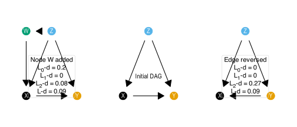
We can see that the mean distance is similar between \(\mathcal{G}\) and the two variations. However the edge reversal is penalising on the \(\mathcal{L}_2\) distance, whilst the addition of a (causally) irrelevant node only penalises on the \(\mathcal{L}_0\) distance. This highlights that \(\operatorname{d}^{\mathcal{L}_1}\).
It is important to note that \(^\mathcal{L}_{1,2}\operatorname{d}\) is sensitive to the proportion of nodes shared between the graphs. Two large graphs that only overlap on a small number of nodes and still be largely \(\mathcal{L}_{1,2}\)-consistent if the shared nodes have similar causal implications.
Here we examine the same baseline DAG, but instead look at two ‘finer-grained’ DAGs that have more detail in the causal structure, but we can recover the original DAG by clustering some nodes and coarsening the finer grained DAGs. We consider two finer grained DAGs, \(\mathcal{G}^{[x,z]}=\{X_1 \rightarrow X_2 \rightarrow Y\} \cup \{X_1 \leftarrow Z_1 \rightarrow Y\} \cup \{X_2 \leftarrow Z_2 \rightarrow Y\}\) that clusters on both \(X\) and \(Z\), and \(\mathcal{G}^{[x]}=\{X_2 \rightarrow X_1 \rightarrow Y\} \cup \{X_2 \rightarrow Y\} \cup \{X_1 \leftarrow Z \rightarrow Y\}\) that only clusters on \(X\) but has a more problematic causal structure for this coarsening. The coarsening map, \(\phi\) is simply grouping the variables by their first letter.
p.vignette.deg <-
(vntPlotF1A ) +
(vntPlotC1 +
annotate("text", x = 1, y = 0.3, label = "Cluster DAG")) +
(vntPlotF1B)
ggsave("figures/fig--vignette-causal-degradation.png",
height = 4, width = 12,
plot = p.vignette.deg)
p.vignette.deg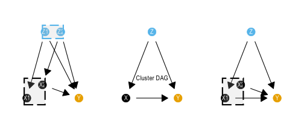
Under this coarsening we see:
Here we see that the only causal degradation is when we coarsen \(\mathcal{G}^{[x]}\). We see the \(\mathcal{L}_2\) degradation because the adjustment sets for \(P(Y |\operatorname{do}(Z))\) disagree on what to do with \(X\). In the fine graph \(X_1\) should be excluded from the adjustment set, wheras \(X_2\) should be included as the open path \(Z \rightarrow X_1 \leftarrow X_2 \rightarrow Y\) is open but non-causal. This disagreement cannot be reconciled when we form the cluster \([X]=\{X_1, X_2\}\) in the cluster DAG. We see the \(\mathcal{L}_1\) degradation because the cluster DAG is fully connected, but the fine DAG has \(X_2 \perp Z\), which is lost moving to the cluster DAG.
Thought: Could the causal degradation work equally well for projections, and embeddings?
The following three DAGs have been constructed to push the triangle inequality: \(d(x,z) \le d(x,y)+d(y,z)\). They are chosen so that model \(G_Y\) is very similar in its overlapping nodes to \(G_X\) and \(G_Z\), but that \(G_X\) and \(G_Z\) strongly disagree where they overlap.
diabolic.X <- tbl_graph(
edges = tribble(
~from, ~to,
# Has strong connections between A, B, C
"A", "B",
"A", "C",
"B", "C",
"A", "Lx",
# Identical structure in Y
"Lx", "Mx",
"Lx", "Kx",
"Mx", "Kx",
)
)
diabolic.Y <- tbl_graph(
edges = tribble(
~from, ~to,
# Identical structure
"Lx", "Mx",
"Lx", "Kx",
"Mx", "Kx",
"Lz", "Mz",
"Lz", "Kz",
"Mz", "Kz",
# joining them together
"Y", "Kz",
"Y", "Kx"
)
)
diabolic.Z <- tbl_graph(
edges = tribble(
~from, ~to,
# Has strong connections between A, B, C
"A", "Mz",
"B", "Lz",
"C", "Kz",
# Identical structure in Y
"Lz", "Mz",
"Lz", "Kz",
"Mz", "Kz"
)
)gcm_qplot(diabolic.X)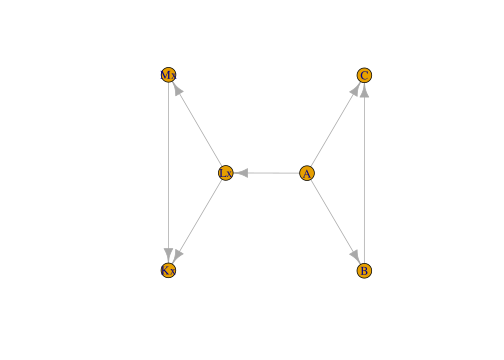
gcm_qplot(diabolic.Y)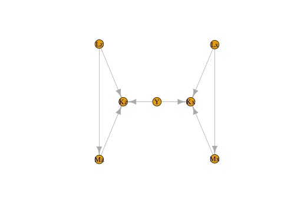
gcm_qplot(diabolic.Z)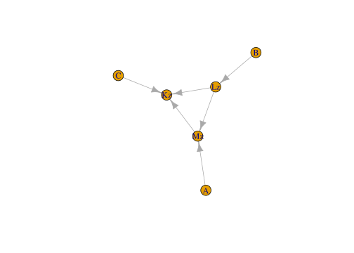
diabolic.dissimilarities <-
tibble(pair = c("X, Z", "X, Y", "Y, Z"),
L0 = c(
L0_d(diabolic.X, diabolic.Z),
L0_d(diabolic.X, diabolic.Y),
L0_d(diabolic.X, diabolic.Y)
),
L1 = c(
L1_d(diabolic.X, diabolic.Z),
L1_d(diabolic.X, diabolic.Y),
L1_d(diabolic.X, diabolic.Y)
),
L2 = c(
L2_d(diabolic.X, diabolic.Z),
L2_d(diabolic.X, diabolic.Y),
L2_d(diabolic.X, diabolic.Y)
)
) For these difficult models, we first look at the distance metric, which checks all \(\mathcal{L}_i\) statements, regardless of a common vocabulary, and finds the Jaccard distance of that:
The triangle equality holds for this set, but it also describes X,Y and Y,Z as nearly as far apart on \(\mathcal{L}_1\) and \(\mathcal{L}_2\) as possible, despite containing no contradictions of statements within either of these shared vocabularies. These seems like an unhealthy way to examine causal consistency between models. The dissimilarity measure completely violates the triangle equality however, but returns seemingly more intuitive results:
diabolic.dissimilarities |>
knitr::kable(digits = 2)| pair | L0 | L1 | L2 |
|---|---|---|---|
| X, Z | 0.60 | 0.9 | 0.3 |
| X, Y | 0.64 | 0.0 | 0.0 |
| Y, Z | 0.64 | 0.0 | 0.0 |
Note here that \((\mathcal{L}_0 + \mathcal{L}_1 + \mathcal{L}_2)/3\) does not satisfy the triangle inequality in this case. This, however, is not required for clustering anyway, and it is better that the measures make sense.
# imports all causal models as DAGitty objects
# They are names dag_s1, ..., dag_s8 corresponding to the eight sessions
# A table of session data is also included
source("load-GCMs.R")# Some colours
# \definecolor{myochre}{RGB}{204,119,34}
# \definecolor{mygum}{RGB}{87,180,66}
myochre <- rgb(204, 119, 34, maxColorValue = 255)
mygum <- rgb(87, 180, 66, maxColorValue = 255)
node_type_colours <- c(
"Assessment data" = "#000000",
"Learning data" = "#999999",
"Help" = "#CC79A7",
"Student" = "#009E73",
"Teacher" = "#E69F00",
"Learning design" = "#56B4E9"
)
wrap_width <- 10
hue1 <- palette.colors(3, palette = "Okabe-Ito")[[2]]
hue2 <- palette.colors(3, palette = "Okabe-Ito")[[3]]Modelling sessions were originally run on Loopy, then transcribed into DAGitty (online) to generate the following dot language syntax for importing into R. A better way of doing this is under development.
Data imported as DAGitty objects, but need to be in tidygraph format for many calculations and visualisations.
Creating a list of all the DAGs in tidy format:
# making list of dagitty dags (used later)
ddags <- list(
"M1" = dag_m1,
"M2" = dag_m2,
"M3" = dag_m3,
"M4" = dag_m4,
"M5" = dag_m5,
"M6" = dag_m6,
"M7" = dag_m7,
"M8" = dag_m8
)
tdags <- list(
"M1" = dagitty_to_tidygraph(dag_m1),
"M2" = dagitty_to_tidygraph(dag_m2),
"M3" = dagitty_to_tidygraph(dag_m3),
"M4" = dagitty_to_tidygraph(dag_m4),
"M5" = dagitty_to_tidygraph(dag_m5),
"M6" = dagitty_to_tidygraph(dag_m6) |>
filter( # this removes feedback link to next learning cycle
!str_detect(name, "Post")),
"M7" = dagitty_to_tidygraph(dag_m7),
"M8" = dagitty_to_tidygraph(dag_m8))
ddags.raw <- ddags
ddags <-
imap(tdags, \(g, n)
tidygraph_to_dagitty(g)) |>
map(\(d) {
dagitty::outcomes(d) <- "Grade"
d}) |>
imap(\(d, n) {
if (n != "M7") {
dagitty::exposures(d) <-
"S.Kn"
} else {
dagitty::exposures(d) <-
c("S.Kn.Coms", "S.Kn.Interp", "S.Kn.Tech")
}
d})
quick_list_of_all_nodes <-
map(tdags, \(g) pull(g, name)) |>
unlist() |>
unique() |>
sort()
rm(dag_m1, dag_m2, dag_m3, dag_m4, dag_m5, dag_m6, dag_m7, dag_m8)Different people used different language to describe their understanding of the system in question. In order to make comparisons we must work out when they are talking about the same thing (in graph terms, the same node) or when they are talking about different things. To complicate things there is also the challenge of hierarchical modelling choices - sometimes people would describe one thing in more detail than others. In graph terms this would mean one model might have “student subject knowledge” (see model 8) whereas another might break this into components (see model 7).
To make meaningful comparisons we must:
Coding the nodes into rough groups. There are two levels:
node_group is the first aggregation into slightly coarser groups of nodes.node_type is an even more coarse grouping into a handful of types.Also some nicer names of the fields: - node_nice_name is a longer more explanatory name for plotting and putting in tables. - node_group_nice_name a longer more explanatory name for node groups, as above.
name_node_nice_name <- tribble(
~name, ~nice_name,
"CD", "Any system data",
"CD.Att", "Attendance",
"CD.LMS", "LMS activity",
"CD.LMS.code", "Code artifacts",
"CD.LMS.write", "Writing artifacts",
"CD.Str", "Course Data",
"Grade", "Assessment grade",
"Grade.Coms", "Mark - Communication",
"Grade.Exam", "Mark - Exam",
"Grade.Interp", "Mark - Interpretation",
"Grade.Proc", "Mark - Learning process",
"Grade.Quiz", "Mark - Quiz",
"Grade.Ref", "Mark - Learning reflection",
"Grade.Tech", "Mark - Technical",
"H", "Help (general)",
"H.AI", "Help from AI (any)",
"H.AI.Agent", "Help from AI (agent)",
"H.AI.evil", "Misuse of AI",
"H.AI.evil.code", "Misuse of AI (code)",
"H.AI.evil.write", "Misuse from AI (write)",
"H.AI.Fb", "Help from AI (feedback)",
"H.AI.good", "Help from AI (to learn)",
"H.AI.Res", "Help from AI (research)",
"H.AI.Study", "Help from AI (revision)",
"H.Ment", "Help from mentor",
"H.other.evil", "Cheating - non-AI",
"H.Peer", "Help from peers",
"H.Tut", "Help from teacher / tutor",
"H.Tut.Fb", "Feedback from teacher / tutor",
"LD", "Learning design",
"LD.Other", "Other learning design",
"LD.AIguide", "Guidance on AI use",
"LD.Task", "Task design",
"LD.Task.Code", "Coding task design",
"LD.Task.Grp", "Groupwork task design",
"LD.Task.Other", "Other task design",
"LD.Task.Prac", "Practical task design",
"LD.Task.Write", "Writing task design",
"S.Act", "Student decisions / actions",
"S.Act.AIstrat", "Student AI strategy",
"S.Act.Fb", "Student acts on feedback",
"S.Act.Fb.Post", "Student acts on feedback between subjects",
"S.Act.Frm", "Student does formative tasks",
"S.Act.Perf", "Student performance on task",
"S.Act.Time", "Student commits time",
"S.Aff.Integ", "Student acting with integrity",
"S.Aff.Joy", "Student enjoyment",
"S.Aff.MindSet", "Student mindset",
"S.Aff.Safe", "Student feels safe",
"S.Aff.WrkLd", "Student workload pressure",
"S.Cp.WrkLd", "Student workload pressure",
"S.Aff.Hsk", "Student help seeker",
"S.Att.Eq", "Student equity group",
"S.Cp.Hsk", "Student help seeker",
"S.Att.Nro", "Student neuro-divergent",
"S.Att.SocCap", "Student social capital",
"S.Kn.Aca", "Student academic skill",
"S.Cp.Aca", "Student academic skill",
"S.Cp.Aca.Post", "Student academic skill: Post grade",
"S.Cp.EvJdg", "Student evaluative judgement",
"S.Cp.Fb", "Student feedback literacy",
"S.Cp.Grp", "Student groupwork capability",
"S.Cp.Ind", "Student individual work capability",
"S.Cp.Lrn", "Student metacognative learning capabilities",
"S.Cp.SRL", "Student SRL",
"S.Kn", "Student subject knowledge",
"S.Kn.Post", "Student subject knowledge: Post grade",
"S.Kn.Coms", "Student communications knowledge",
"S.Kn.Interp", "Student interpretation knowledge",
"S.Kn.Prior", "Student prior knowledge",
"S.Kn.Tech", "Student technical knowledge",
"T.Act.UseAI", "Teacher use of AI",
"T.Aff.Integ", "Teacher acts with integrity",
"T.Aff.WrkLd", "Teacher workload pressure",
"T.Cp.WrkLd", "Teacher workload pressure",
"T.Cp.Inst", "Teacher instruction quality",
"T.Cp.KnStu", "Teacher knows students",
"T.Cp.Mark", "Teacher reliably marks",
"T.Kn.AI", "Teacher AI literacy",
"T.Cp.AI", "Teacher AI expertise",
"T.Kn.Ass", "Teacher assessment literacy",
"T.Kn.Sub", "Teacher subject knowledge",
"T.Cp.Sub", "Teacher subject expertise"
)
node_group_nice_name <- tribble(
~node_group, ~nice_name,
"Assessments", "Preliminary assessments",
"CD.Att", "Student attendance",
"CD.LMS", "LMS activity",
"CD.Str", "Course Data",
"Grade", "Assessment grade",
"H.AI.evil", "Misuse of AI",
"H.AI.good", "Help from AI",
"H.Cheat", "Cheating - non-AI",
"H.Peer", "Help from peers",
"H.Gen", "Help (General)",
"H.Tut", "Help from teacher / tutor",
"LD.Gen", "Learning design",
"LD.Task", "Task design",
"S.Act", "Student decisions / actions",
"S.Att", "Student attributes",
"S.Cp", "Student metacognitive skill",
"S.EM", "Student emotion / motivation",
"S.Kn", "Student knowledge",
"S.Kn.Prior", "Student prior knowledge",
# "T.Act", "Teacher use of AI",
"T.Cp", "Teacher capabilities",
"T.EM", "Teacher emotion / motivation",
"T.Kn", "Teacher knowledge"
)This process involved iterating between:
Student knowledge was a key example of this, where several models split this into finer grained nodes, where others did not.code_node_group <- function(v) {
case_when(
# Course data - Str, LMS --------------
v == "CD" ~ "CD.Str", # was blending LMS and Str, but original graph was more about structure
str_detect(v, "CD\\.LMS") ~ "CD.LMS",
v == "CD.Att" ~ "CD.Att", # Attendance data
v == "CD.Str" ~ "CD.Str",
# Grade data --------------------------
v == "Grade" ~ "Grade",
str_detect(v, "Grade\\.") ~ "Grade", # Assessments
# Kinds of help / assistance -----------------------
# - Help from teacher or tutor
# - - H.Gen(eral) for the broad H category
v == "H" ~ "H.Gen", # This should actually be the node_type...somehow
v == "H.Tut" ~ "H.Tut",
v == "H.Ment" ~ "H.Tut",
v == "H.Tut.Fb" ~ "H.Tut",
# - Help from peers - collapsing with Tut for "help from people" - change from first coding
v == "H.Peer" ~ "H.Tut",
# - Help from AI (good or bad usage)
str_detect(v, "H\\.AI\\.evil") ~ "H.AI.evil",
str_detect(v, "H\\.AI") ~ "H.AI.good",
# - Other nefarious help (i.e. cheating)
v == "H.other.evil" ~ "H.Cheat",
# Learning Design --------------------
str_detect(v, "^LD\\.Task") ~ "LD.Task",
str_detect(v, "^LD") ~ "LD.Gen",
# Student nodes ---------------------------------
# - Student activity / decisions
# - - Action post grade a seperate node
v == "S.Act.Fb.Post" ~ "S.Act.Post",
v == "S.Cp.Aca.Post" ~ "S.Cp.Post",
str_detect(v, "^S\\.Act") ~ "S.Act",
# - Student attributes (generally unchangable)
str_detect(v, "^S\\.Att") ~ "S.Att",
# - Student metacognitive capability (metacognition) / capacity / workload
str_detect(v, "^S\\.Cp") ~ "S.Cp",
# - Student emotion / motivation
str_detect(v, "^S\\.Aff") ~ "S.EM",
# - Student knowledge (cognition)
v == "S.Kn.Prior" ~ "S.Kn.Prior",
v == "S.Kn.Post" ~ "S.Kn.Post",
str_detect(v, "^S\\.Kn") ~ "S.Kn",
# Teacher nodes ---------------------------------
# - Teacher knowledge / meta-cognition: What they bring to the table
str_detect(v, "^T\\.Kn") ~ "T.Kn",
# - Teacher capabilities - usually executed during learning cycle
str_detect(v, "^T\\.Cp") ~ "T.Cp",
# - Teacher emotion / motivation
str_detect(v, "^T\\.Aff") ~ "T.EM",
TRUE ~ v
)
}code_node_type <- function(n) {
fl <- str_extract(n, "^.{1}")
case_when(
fl == "S" ~ "Student",
fl == "T" ~ "Teacher",
fl == "C" ~ "Learning data",
fl == "H" ~ "Help",
fl == "L" ~ "Learning design",
fl == "G" ~ "Assessment data"
) |>
factor(levels = rev(c(
"Learning design",
"Teacher",
"Student",
"Help",
"Learning data",
"Assessment data"
)))
}From the node groups, describe how easy (or not) they are to measure. This is completed by someone familiar to the data warehouse at the institution:
code_node_measurability <- function(node) {
case_when(
# Student
node == "S.Att.SocCap" ~ "PO", # check
node == "S.Att.Nro" ~ "O",
node == "S.Att.Eq" ~ "DW",
node == "S.Att.HSk" ~ "PO",
node == "S.Act.AIstrat" ~ "L",
node == "S.Act.Fb" ~ "L",
node == "S.Act.Fb.Post" ~ "L",
str_detect(node, "^S\\.Act") ~ "PO",
str_detect(node, "^S\\.Kn") ~ "PO",
str_detect(node, "^S") ~ "L",
# Help
node == "H.AI.Agent" ~ "O", # within system tool
node == "H.other.evil" ~ "L",
node == "H.Peer" ~ "L",
node == "H.AI.evil" ~ "PO", # Potentially observable
node == "H.AI.evil.code" ~ "PO", # Potentially observable
node == "H.AI.evil.write" ~ "PO",
str_detect(node, "^H\\.AI") ~ "PO", # not trying to hide
str_detect(node, "^H\\.Tu") ~ "PO",
str_detect(node, "^H\\.Ment") ~ "PO",
str_detect(node, "^H") ~ "L",
# Assessment
node == "Grade" ~ "DW",
node == "Grade.Exam" ~ "DW",
str_detect(node, "^Grade") ~ "O",
# Learning data
node == "CD.LMS" ~ "DW",
str_detect(node, "^CD\\.LMS") ~ "O",
node == "CD.Att" ~ "O",
node == "CD.Str" ~ "DW", # check
node == "CD" ~ "O", # check
# Learning design
str_detect(node, "^LD\\.Task") ~ "O",
str_detect(node, "^LD") ~ "PO",
# Teacher
node == "T.Cp.UseAI" ~ "PO",
node == "T.Aff.WrkLd" ~ "PO",
node == "T.Cp.Mark" ~ "PO",
str_detect(node, "^T\\.K") ~ "PO",
str_detect(node, "^T") ~ "L",
node == "Assessments" ~ "DW"
) |>
factor(levels = c("DW", "O", "PO", "L"))
}
coarsen_node_measurability <- function(ng_list) {
x <- str_squish(as.character(ng_list))
n_tot <- str_count(x, "[^;]+")
n_obs <- str_count(x, "(?<![A-Z])(O|DW)(?![A-Z])")
n_po <- str_count(x, "(?<![A-Z])PO(?![A-Z])")
n_lat <- str_count(x, "(?<![A-Z])L(?![A-Z])")
out <- case_when(
is.na(x) | n_tot == 0 ~ NA_character_,
n_obs == n_tot ~ "Observable",
n_po == n_tot ~ "Potentially observable",
n_lat == n_tot ~ "Latent",
n_po + n_lat == n_tot ~ "Likely latent",
n_obs + n_po == n_tot ~ "Likely observable",
TRUE ~ str_c("Some observable (", n_obs, " of ", n_tot, ")")
)
dyn <- sort(unique(out[str_starts(out, "Some observable") & !is.na(out)]))
factor(out, levels = c("Latent", "Likely latent", dyn,
"Potentially observable", "Likely observable",
"Observable"))
}for (i in 1:length(tdags)) {
dag <- tdags[[i]] |>
activate(nodes) |>
mutate(measurable = code_node_measurability(name))
tdags[[i]] <- dag
}node_group_measurability <-
tdags |>
map(
\(d)
d |>
activate(nodes) |>
as_tibble() |>
select(name, measurable)) |>
list_rbind(names_to = "Model") |>
mutate(node_group = code_node_group(name)) |>
group_by(node_group) |>
summarise(m = str_c(measurable, collapse = ";")) |>
mutate(measurability_node_group = coarsen_node_measurability(m)) |>
distinct(node_group, measurability_node_group) |>
arrange(measurability_node_group)Functions outlined in the gcm_helpers.R script. Functions starting with gcm_ should operate on either a dagitty or tidygraph object.
Generating a range of edge metrics - comparisons across models. Want to label edges in the unified DAG as ‘contested’ if they switch direction between some models. Also want to examine the same idea for a list of descendants. This is handled as a new table of edges - including all possible edges.
fill_matrix_NAs_with_colmean <- function(m) {
stopifnot(is.matrix(m), is.numeric(m))
cm <- colMeans(m, na.rm = TRUE)
idx <- which(is.na(m), arr.ind = TRUE)
m[idx] <- cm[idx[, "col"]]
m
}########################################################
# graph metric functions ------------
# Not included in graph_helpers as they are less generic
########################################################
gcm_node_metrics <- function(g) {
if (class(g)[[1]] == "dagitty") g <- dagitty_to_tidygraph(g)
pagerank_no_outcome <-
g %N>%
filter(name != "Grade") |>
mutate(pagerank_no_outcome = centrality_pagerank(damping = 0.85)) |>
as_tibble() |>
select(name, pagerank_no_outcome)
g %N>%
mutate(
node_w = 1,
node_group = code_node_group(name),
node_type = code_node_type(name),
measurability = code_node_measurability(name),
degree = centrality_degree(),
btw = centrality_betweenness(),
btw_rank = rank(-btw, ties.method = "min"), # rank (highest = 1)
btw_rel_rank = (btw_rank - 1) / (n() - 1),
btw_rel = 1 - btw_rel_rank,
eigen = centrality_eigen(),
pagerank = centrality_pagerank(damping = 0.5) # lowers the influence of sinks
) |>
as_tibble() |>
left_join(pagerank_no_outcome, by = "name") |>
mutate(pagerank_no_outcome = replace_na(pagerank_no_outcome, 0))
}
gcm_summary_metrics <- function(g){
if (class(g)[[1]] == "dagitty") g <- dag_to_tg(g)
pagerank_no_outcome <-
g %N>%
filter(name != "Grade") |>
mutate(pagerank_no_outcome = centrality_pagerank(damping = 0.5)) |>
as_tibble() |>
select(name, pagerank_no_outcome)
n.df <- g %N>%
mutate(
pgrnk = centrality_pagerank(damping = 0.5),
ng = code_node_group(name),
m = code_node_measurability(name)) |>
as_tibble() |>
left_join(pagerank_no_outcome, by = "name")
# p_traced <- mean(n.df$m == "Traced")
# p_untraced <- mean(n.df$m == "Untraced")
# pgrnk_traced <- sum(n.df |> filter(m == "Traced") |> pull(pgrnk))
# pgrnk_untraced <- sum(n.df |> filter(m == "Untraced") |> pull(pgrnk))
# pgrnk_no_outcome_traced <- sum(n.df |> filter(m == "Traced") |> pull(pagerank_no_outcome))
# pgrnk_no_outcome_untraced <- sum(n.df |> filter(m == "Untraced") |> pull(pagerank_no_outcome))
p_dw <- mean(n.df$m == "DW")
p_o <- mean(n.df$m == "O")
p_po <- mean(n.df$m == "PO")
p_l <- mean(n.df$m == "L")
measure_metric <- (3 * p_dw + 2 * p_o + 1 * p_po ) / 3
graph_metrics <- list(
order = gorder(g), # number of nodes
size = gsize(g), # number of edges
density = edge_density(g),
diameter = diameter(g), # longest shortest path
mean_path = mean_distance(g),
clustering= transitivity(g, type = "global"),
acyclic = igraph::is_acyclic(as.igraph(g)),
measurability = measure_metric,
p_dw = p_dw,
p_o = p_o,
p_po = p_po,
p_l = p_l
)
graph_metrics
}all_nodes <-
imap(tdags, \(g,m) gcm_nodelist(g)) |>
list_rbind(names_to = "Model")
all_edges <-
imap(tdags, \(g, m) gcm_edgelist(g) |> mutate(Model = m)) |>
list_rbind() |>
adorn_switches_exist(from, to) |>
mutate(edge_alignment = if_else(switched, "contested", "aligned"))
all_possible_edges <-
imap(tdags, \(g, m) gcm_possible_edges(g)) |>
list_rbind(names_to = "Model")
max_possible_edges <-
all_possible_edges |>
filter(from != to) |>
count(from, to) |>
rename(max_n = n)
all_descendants <-
imap(tdags, \(g,m) gcm_all_descendants_edge_list(g)) |>
list_rbind(names_to = "Model") |>
adorn_switches_exist(from, to) |>
mutate(descendant_alignment = if_else(switched, "descendant:contested", "descendant:aligned")) |>
select(-switched)
all_possible_edges_with_metrics <-
all_possible_edges |>
filter(from != to) |>
left_join(
all_edges |>
mutate(in_graph = TRUE),
by = c("Model", "from", "to")) |>
mutate(in_graph = replace_na(in_graph, FALSE)) |>
left_join(
all_descendants |>
mutate(descendant_in_graph = TRUE),
by = c("Model", "from", "to")) |>
mutate(descendant_in_graph = replace_na(
descendant_in_graph, FALSE))
all_edges_sum <-
all_possible_edges_with_metrics |>
group_by(from, to) |>
summarise(
n = sum(in_graph),
n_descendant = sum(descendant_in_graph),
N = n(),
direct_alignment = mean(edge_alignment == "aligned", na.rm = T),
descendant_alignment = mean(
descendant_alignment == "descendant:aligned", na.rm = T),
.groups = "drop") |>
mutate(
p_direct = n / N,
p_descendant = n_descendant / N) |>
arrange(desc(n))
all_edges_in_models_with_metrics <-
all_edges_sum |>
filter(n > 0) |>
inner_join(max_possible_edges,
by = c("from", "to")) |>
mutate(
edge_p_w = n / max_n,
edge_dp_w = n_descendant / max_n) |>
mutate(edge_w = n) |>
adorn_switches_exist(from, to)merged_edges <-
all_edges_in_models_with_metrics |>
mutate(path_type = "causal")
merged_nodes <-
all_nodes |>
count(name) |>
rename(node_w = n) |>
mutate(node_group = code_node_group(name)) |>
mutate(node_type = code_node_type(name)) |>
mutate(measurable = code_node_measurability(name)) |>
left_join(name_node_nice_name, by = "name")
merged_all_graph <- tbl_graph(nodes = merged_nodes, edges = merged_edges)This is based on the coding of the nodes into node groups.
Here we merge nodes into node groups before generating plot later. This has the potential to introduce loops depending on how the constructs were built, so we need to check the causal consistency between the fine-grained graph and the clustered / merged / higher-level graph.
clean_node_group_cluster_graph <- function(cdag) {
# After coarsening with code_node_group cleans up some of the
# names and nodes
dag_out <-
cdag |>
activate(edges) |>
mutate(path_type = "causal") |>
activate(nodes) |>
mutate(node_type = code_node_type(name)) |>
left_join(
node_group_measurability,
by = c("name" = "node_group")
) |>
select(-any_of(c("nice_name", "node_group"))) |>
left_join(
node_group_nice_name,
by = c("name" = "node_group"))
# Attaching node lists
obs_nodes <- dag_out |>
activate(nodes) |>
filter(
measurability_node_group %in% c(
"Observable",
"Likely observable")) |>
pull(name)
dag_out$observable <- obs_nodes
pot_obs_nodes <- dag_out |>
activate(nodes) |>
filter(
measurability_node_group %in% c(
"Observable",
"Likely observable",
"Potentially observable")) |>
pull(name)
dag_out$potentially_observable <- pot_obs_nodes
return(dag_out)
}
node_group_cluster_graph_from_merged <-
gcm_cluster_graph(merged_all_graph, code_node_group) |>
clean_node_group_cluster_graph()
CDAGs <-
map(tdags,
\(g)
gcm_cluster_graph(g, code_node_group) |>
clean_node_group_cluster_graph())
node_group_cluster_graph_from_clusters <-
gcm_merge(
gcm_merge(
gcm_merge(CDAGs[[1]], CDAGs[[2]]),
gcm_merge(CDAGs[[3]], CDAGs[[4]])
),
gcm_merge(
gcm_merge(CDAGs[[5]], CDAGs[[6]]),
gcm_merge(CDAGs[[7]], CDAGs[[8]])
)
)all_paths_summary <-
imap(ddags, \(d, n) gcm_count_paths(d)) |>
list_rbind(names_to = "Model")
all_paths <-
imap(
ddags,
\(d, n) bind_cols(
tibble(Model = n),
dagitty::paths(d, limit = 5000)) |>
group_by(Model) |>
summarise(
paths = list(paths),
n_paths = n(),
n_open = sum(open),
p_open = mean(open)
))|>
list_rbind()
dag_complexity_metrics <-
imap(tdags, \(g, n) as_tibble(gcm_summary_metrics(g))
) |>
list_rbind(names_to = "Model") |>
inner_join(
imap(
ddags,
\(d, n)
tibble(Model = n) |>
mutate(
n_adj_sets = length(dagitty::adjustmentSets(d)))) |>
list_rbind(),
by = "Model"
) |>
inner_join(all_paths_summary, by = "Model")all_nodes_with_metrics <-
imap(tdags, \(g,n) gcm_node_metrics(g)) |>
list_rbind(names_to = "Model")gcm_metrics <-
inner_join(session_data, dag_complexity_metrics, by = "Model") all_nodes_with_metrics |>
count(node_type) |>
arrange(node_type) |>
knitr::kable(caption = "Counts of the nodes according to type")| node_type | n |
|---|---|
| Assessment data | 15 |
| Learning data | 14 |
| Help | 31 |
| Student | 43 |
| Teacher | 9 |
| Learning design | 11 |
# denser option - radial arc bars for observable
library(scales)
library(ggforce)
library(patchwork)
library(cowplot)
# Main plot - hide all legends
p_validity_and_time <- gcm_metrics |>
mutate(
x_duration = as.numeric(Modelling.duration, units = "minutes"),
y_validity = GCM.validity
) |>
mutate(acyclic = if_else(acyclic, "Yes", "No")) |>
ggplot(aes(
color = acyclic,
size = n_adj_sets
)) +
geom_point(aes(
x = x_duration,
y = y_validity)) +
scale_y_continuous(
limits = c(1, 4.05),
breaks = c(1, 2, 3, 4),
labels = c("Trivially", "Simply", "Adequately", "Well"),
name = "Representation of GCM") +
scale_x_continuous(
limits = c(33, 52), # was 55 to Keep original limits for the data
breaks = c(35, 40, 45,50),
name = "Time spent constructing model (minutes)") +
scale_size(range = c(2, 7),
breaks = range(gcm_metrics$n_adj_sets),
name = "Adjustment\nsets (count)") +
scale_color_manual(values = c(hue1, hue2), name = "Acyclic?") +
scale_fill_manual(values = c(hue1, hue2), guide = "none") +
theme_minimal() +
# coord_fixed(ratio = 2
# # , clip = "off"
# ) +
theme(
legend.position = "left", # Hide legends from main plot
# panel.grid.major.x = element_blank(), # Remove vertical gridlines
panel.grid.minor = element_blank(),
plot.margin = margin(10, 10, 10, 10)
)
p_visibility <- gcm_metrics |>
mutate(
cp_dw = p_dw,
cp_o = p_dw + p_o,
cp_po = p_dw + p_o + p_po,
cp_l = p_dw + p_o + p_po + p_l # should equal 1
) |>
mutate(GCM.validity = case_when(
GCM.validity == 3 & acyclic ~ GCM.validity - 0.03,
GCM.validity == 3 & !acyclic ~ GCM.validity + 0.03,
GCM.validity == 2.5 & acyclic ~ GCM.validity - 0.03,
GCM.validity == 2.5 & !acyclic ~ GCM.validity + 0.03,
TRUE ~ GCM.validity
)) |>
pivot_longer(c(starts_with("cp_"), starts_with("p_")), names_to = "node_vis", values_to = "proportion") |>
mutate(node_visibility = case_when(
str_detect(node_vis, "p_dw") ~ "Data Warehouse",
str_detect(node_vis, "p_o") ~ "Observable",
str_detect(node_vis, "p_po") ~ "Potentially observable",
str_detect(node_vis, "p_l") ~ "Latent"
) |>
ordered(levels = c(
"Latent",
"Potentially observable",
"Observable",
"Data Warehouse"
))) |>
mutate(prop_type = if_else(str_detect(node_vis, "^cp_"), "cp", "p")) |>
pivot_wider(names_from = prop_type, values_from = proportion, id_cols = c(Model,acyclic, GCM.validity, node_visibility)) |>
mutate(acyclic = if_else(acyclic, "Yes", "No")) |>
ggplot(aes(
color = acyclic
)) +
geom_rect(aes(
xmin = cp - p,
xmax = cp,
ymin = GCM.validity - 0.03,
ymax = GCM.validity + 0.03,
fill = acyclic,
alpha = node_visibility),
color = "white") +
scale_y_continuous(
limits = c(1, 4.05),
breaks = c(1, 2, 3, 4),
labels = c("Trivially", "Simply", "Adequately", "Well"),
name = "Representation of GCM",
position = "right") +
scale_alpha_discrete(name = "Data visibility") +
scale_fill_manual(values = c(hue1, hue2), guide = "none") +
theme_minimal() +
# coord_fixed(ratio = 0.15
# # , clip = "off"
# ) +
xlab("Proportion of nodes") +
theme(
legend.position = "right", # Hide legends from main plot
# panel.grid.major.x = element_blank(), # Remove vertical gridlines
panel.grid.minor = element_blank(),
plot.margin = margin(10, 10, 10, 10),
axis.title.y = element_blank(),
axis.text.y = element_blank()
)
p_time_and_representation_1 <- p_validity_and_time + p_visibility
p_time_and_representation_1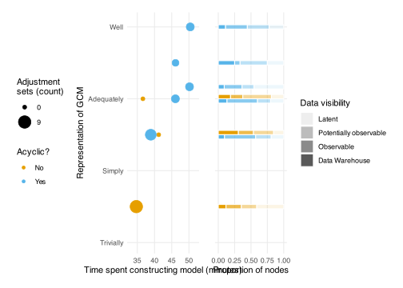
ggsave("figures/FIG--time-modelling-and-representation.jpg",
plot = p_time_and_representation_1,
width = 10, height = 5,
dpi = 300)As a table:
gcm_metrics |>
mutate(acyclic = if_else(acyclic, "Yes, DAG", "No, contained cycles")) |>
arrange(desc(Modelling.duration)) |>
select(Modelling.duration, GCM.validity, acyclic, n_adj_sets, p_dw, p_o, p_po, p_l) |>
knitr::kable(caption = "GCM session metrics")| Modelling.duration | GCM.validity | acyclic | n_adj_sets | p_dw | p_o | p_po | p_l |
|---|---|---|---|---|---|---|---|
| 50M 23S | 4.000 | Yes, DAG | 2 | 0.1111111 | 0.2222222 | 0.4444444 | 0.2222222 |
| 50M 10S | 3.167 | Yes, DAG | 2 | 0.0909091 | 0.1818182 | 0.2727273 | 0.4545455 |
| 46M 6S | 3.500 | Yes, DAG | 1 | 0.2500000 | 0.0000000 | 0.5000000 | 0.2500000 |
| 46M 4S | 3.000 | Yes, DAG | 2 | 0.1333333 | 0.4000000 | 0.2666667 | 0.2000000 |
| 41M 13S | 2.500 | No, contained cycles | 0 | 0.3076923 | 0.0769231 | 0.4615385 | 0.1538462 |
| 38M 55S | 2.500 | Yes, DAG | 6 | 0.0952381 | 0.2857143 | 0.4285714 | 0.1904762 |
| 36M 37S | 3.000 | No, contained cycles | 0 | 0.1875000 | 0.0625000 | 0.5625000 | 0.1875000 |
| 34M 43S | 1.500 | No, contained cycles | 9 | 0.1176471 | 0.1176471 | 0.3529412 | 0.4117647 |
merged_all_graph_layout <- create_layout(
merged_all_graph %E>%
mutate(switched = if_else(
switched, "contested", "alligned")), # needs switched boolean
layout = "sugiyama")
merged_all_graph_layout_adjusted <-
merged_all_graph_layout |>
mutate(
# x = if_else(name == "S.Post.Fb",x + 20,x),
y = if_else(name == "S.Act.Fb.Post",y + 4,y)
) |>
mutate(
x = if_else(name == "S.Act",x + 20,x),
y = if_else(name == "S.Act",y - 4,y)
)
plot_fine_graph_from_layout <- function(lyt, weight_nodes = TRUE) {
ppp <-
lyt |>
ggraph()
if (weight_nodes) {
pp <- ppp +
geom_node_point(aes(colour = node_type,
size = node_w)) +
scale_size(name = "point-size") +
geom_edge_fan(aes(
alpha = edge_p_w * edge_w + edge_w,
edge_linetype = factor(switched)),
strength = 0.2,
arrow = arrow(length = unit(1, 'mm'),
type = "closed"),
start_cap = circle(3, 'mm'),
end_cap = circle(3, 'mm'))
} else {
pp <- ppp +
geom_node_point(aes(colour = node_type)) +
geom_edge_fan(strength = 0.2, alpha = 0.5,
arrow = arrow(length = unit(1, 'mm'),
type = "closed"),
start_cap = circle(1, 'mm'),
end_cap = circle(1, 'mm'))
}
pp +
scale_colour_manual(
values = node_type_colours,
limits = names(node_type_colours),
drop = FALSE
) +
theme_graph() +
scale_edge_alpha_continuous(range = c(0.15,0.8)) +
scale_alpha_continuous(range = c(0.3,1)) +
theme(legend.position = "none",
plot.margin = margin(t = 0, r = 0, b = 0, l = 0, unit = "pt")) +
scale_x_continuous(expand = expansion(mult = 0.1))
}
g_plot_fine <- function(g,
lyt = merged_all_graph_layout_adjusted,
weight_nodes = TRUE) {
create_layout(g, layout = "sugiyama") |>
left_join(
lyt |>
select(x,y,name,node_group,node_type,node_w),
by = "name",
suffix = c(".default", "")) |>
plot_fine_graph_from_layout(weight_nodes = weight_nodes)
}
pMergedFineLegendTall <- merged_all_graph_layout_adjusted |>
g_plot_fine() +
theme(legend.position = "right") +
guides(size = "none", alpha = "none", edge_alpha = "none", edge_width = "none",
color = guide_legend(ncol = 2)) +
theme(legend.title = element_blank())
leg_tall <- cowplot::get_legend(pMergedFineLegendTall)
leg_tall_plot <- cowplot::ggdraw(leg_tall)set.seed(1)
merged_coarse_layout <-
merged_all_graph |>
gcm_cluster_graph(code_node_group) |>
clean_node_group_cluster_graph() |>
activate(edges) |>
mutate(path_type = "causal") |>
create_layout(layout = "sugiyama") |>
mutate(
x = case_when(
name == "Grade" ~ 20,
name == "CD.Str" ~ 18.6,
name == "CD.Att" ~ 21.5,
name == "CD.LMS" ~ 23,
name == "S.Kn" ~ 20,
name == "S.Kn.Prior" ~ 20,
name == "S.Act" ~ 21,
name == "S.EM" ~ 23,
name == "S.Cp" ~ 21.6,
name == "S.Att" ~ 22,
# name == "T.EM" ~ 30,
# name == "T.Kn" ~ 31,
name == "H.Gen" ~ 19,
name == "H.AI.evil" ~ 22.4,
name == "H.Cheat" ~ 22.5,
name == "H.AI.good" ~ 19.4,
name == "H.Tut" ~ 19,
name == "LD.Task" ~ 18,
name == "LD.Gen" ~ 18,
name == "T.Cp" ~ 17,
name == "T.Kn" ~ 17.3,
name == "T.EM" ~ 18,
# name == "H.AI.good" ~ 27,
TRUE ~ x),
y = case_when(
name == "Grade" ~ 1,
name == "CD.Str" ~ 2,
name == "CD.Att" ~ 2.5,
name == "CD.LMS" ~ 3,
name == "S.Kn" ~ 8,
name == "S.Kn.Prior" ~ 12,
name == "S.Act" ~ 6,
name == "S.EM" ~ 10,
name == "S.Cp" ~ 8,
name == "S.Att" ~ 12,
# name == "Grade" ~ y - 2.5,
# name == "CD.Att" ~ 7,
name == "LD.Task" ~ 6,
# name == "CD.LMS" ~ 4,
# name == "LD.Task" ~ y +2.5,
name == "H.Gen" ~ 4,
name == "H.Tut" ~ 6.5,
name == "H.AI.good" ~ 5,
name == "H.AI.evil" ~ 5,
name == "H.Cheat" ~ 7,
# name == "S.Cp" ~ y + 0.5,
# name == "T.Cp" ~ 4.5,
# name == "T.Kn" ~ y - 2,
name == "T.EM" ~ 10,
name == "T.Cp" ~ 9,
name == "T.Kn" ~ 11,
# name == "H.Tut" ~ y - 1,
# name == "H.AI.good" ~ y - 0.8,
# name == "H.AI.evil" ~ y - 2.5,
# name == "H.Cheat" ~ y,
# name == "S.EM" ~ 5,
TRUE ~ y)
)
plot_coarse_graph_from_layout <- function(lyt) {
nodes <- get_nodes()(lyt)
causal_edges <- filter(get_edges()(lyt),
path_type == "causal") |>
select(from, to, edge_w, path_type) |>
mutate(edge_w = 2*edge_w)
confound_edges <- filter(get_edges()(lyt),
path_type == "confound") |>
mutate(edge = if_else(from > to,
str_c(to, "--", from),
str_c(from, "--", to))) |>
group_by(edge, path_type) |>
summarise(
from = min(from),
to = max(to),
edge_w = sum(edge_w),
.groups = "drop"
) |>
select(from, to, edge_w, path_type)
tbl_graph(
nodes = nodes,
edges = bind_rows(causal_edges, confound_edges),
directed = TRUE) |>
ggraph(layout = "manual", x = x, y = y) +
geom_edge_fan(
aes(alpha = edge_w, filter = path_type == "causal"),
strength = 0.8, linetype = 1,
color = "grey20",
arrow = arrow(length = unit(2.5, 'mm')),
start_cap = circle(3, 'mm'),
end_cap = circle(3, 'mm')) +
geom_edge_arc(
aes(alpha = edge_w, filter = path_type == "confound"),
linetype = 2,
color = "grey30",
strength = -0.1,
start_cap = circle(3, 'mm'),
end_cap = circle(3, 'mm')) +
geom_node_point(aes(colour = node_type
# , size = node_w
)) +
scale_colour_manual(
values = node_type_colours,
limits = names(node_type_colours),
drop = FALSE
) +
theme_graph() +
scale_edge_alpha_continuous(range = c(0.4,0.8)) +
scale_x_continuous(expand = expansion(mult = 0.1)) +
# scale_alpha_continuous(range = c(0.2,0.6)) +
theme(legend.position = "none")
}
g_plot_coarse <- function(g, lyt = merged_coarse_layout,
label = FALSE,
label_size = 5) {
edge_attr <- g |>
activate(edges) |>
as_tibble() |>
names()
if (!("path_type" %in% edge_attr)) {
g <- g |>
activate(edges) |>
mutate(path_type = "causal")
}
if (!("edge_w" %in% edge_attr)) {
g <- g |>
activate(edges) |>
mutate(edge_w = 1)
}
if (is.null(lyt)) {
p <- create_layout(g, layout = "sugiyama") |>
plot_coarse_graph_from_layout()
} else {
p <- create_layout(g, layout = "sugiyama") |>
left_join(
lyt |>
select(x,y,
name, nice_name,
node_type,node_w),
by = "name",
suffix = c(".default", "")) |>
plot_coarse_graph_from_layout()
}
if (label) {
p <- p +
geom_node_text(aes(
colour = node_type,
label = str_wrap(
nice_name, width = wrap_width)),
nudge_y = -0.2 * label_size,
alpha = 0.7,
size = label_size)
}
return(p)
}
pCoarseMerged <- merged_coarse_layout |>
plot_coarse_graph_from_layout() +
geom_node_text(aes(label = name))
pCoarseMerged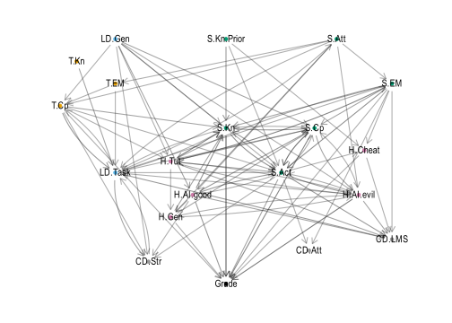
# ggsave("dag_merged_course.svg", pCoarseMerged, , width = 6, height = 6)plot_highlighted_fine_graph <- function(model = 1, LEGEND_POSITION = "none") {
MODEL <- paste0("M", model)
nodes_in_graph <- all_nodes |>
filter(Model == MODEL) |>
pull(name)
edges_in_graph <- all_edges |>
filter(Model == MODEL) |>
select(from, to)
edges_in_graph_indexed <-
edges_in_graph |>
mutate(
from = match(from, merged_all_graph %N>% as_tibble() |> pull(name)),
to = match(to, merged_all_graph %N>% as_tibble() |> pull(name))
)
g_highlight <- merged_all_graph %N>%
mutate(
node_highlight = if_else(
name %in% nodes_in_graph, 2, 1
)) %E>%
left_join(
edges_in_graph_indexed |>
mutate(edge_highlight = 2),
by = c("from", "to")
) |>
mutate(edge_highlight = replace_na(edge_highlight, 1)) |>
create_layout("sugiyama")
g_highlight |>
ggraph() +
geom_edge_fan(aes(
# edge_linetype = factor(switched),
alpha = edge_highlight),
strength = 0.2,
arrow = arrow(length = unit(1, 'mm'),
type = "closed"),
start_cap = circle(3, 'mm'),
end_cap = circle(3, 'mm')) +
geom_node_label(
aes(label = str_wrap(nice_name, width = wrap_width),
color = node_type,
size = node_w),
alpha = 0.7,
data = g_highlight |>
filter(node_highlight == 2),
repel = T, max.overlaps = 30,
show.legend = FALSE) +
geom_node_point(aes(colour = node_type,
size = node_w,
alpha = node_highlight)) +
scale_size(name = "point-size", range = c(2,3)) +
scale_colour_manual(
values = node_type_colours,
limits = names(node_type_colours),
drop = FALSE
) +
theme_graph() +
scale_edge_alpha_continuous(range = c(0.08,0.8)) +
scale_alpha_continuous(range = c(0.1,1.0)) +
# theme(legend.position = "none",
# plot.margin = margin(t = 0, r = 0, b = 0, l = 0, unit = "pt")) +
theme(legend.position = LEGEND_POSITION) +
guides(size = "none", edge_width = "none", alpha = "none", edge_alpha = "none",
color = guide_legend(ncol = 1)) +
theme(legend.title = element_blank())
}
merged_cluster_graph_ng_no_post_nodes <-
merged_all_graph |>
activate(nodes) |>
filter(!str_detect(name, "Post")) |>
gcm_cluster_graph(code_node_group) |>
clean_node_group_cluster_graph() |>
mutate(node_group = name) |>
activate(nodes) |>
left_join(merged_coarse_layout |> select(name, x, y), by = "name")
plot_highlighted_coarse_graph <- function(model = 1, LEGEND_POSITION = "none",
repel_labels = TRUE) {
merged_coarse_models <-
merged_cluster_graph_ng_no_post_nodes
MODEL <- paste0("M", model)
node_groups_in_graph <- all_nodes |>
filter(Model == MODEL) |>
mutate(name = code_node_group(name)) |>
distinct(name) |>
pull(name)
edges_in_coarse_graph <- all_edges |>
filter(Model == MODEL) |>
select(from, to) |>
mutate(across(from:to, code_node_group))
edges_in_graph_indexed <-
edges_in_coarse_graph |>
mutate(
from = match(from,
merged_coarse_models |>
as_tibble() |>
pull(name)),
to = match(to,
merged_coarse_models %N>%
as_tibble() |>
pull(name))
)
edge_integers <-
edges_in_graph_indexed |>
mutate(p2p3 = (2 ** from) * (3 ** to) ) |>
pull(p2p3)
g_highlight <-
merged_coarse_models %N>%
mutate(
node_highlight = if_else(
name %in% node_groups_in_graph, 1.0, 0.1
)) %E>%
mutate(
edge_highlight = if_else(
((2 ** from) * (3 ** to)) %in% edge_integers,
1.0, 0.1
)
)
g_highlight |>
ggraph(layout = "manual",
x = g_highlight %N>% pull(x),
y = g_highlight %N>% pull(y)
) +
geom_edge_fan(aes(
# edge_linetype = factor(switched),
alpha = edge_highlight),
strength = 0.2,
arrow = arrow(length = unit(1, 'mm'),
type = "closed"),
start_cap = circle(3, 'mm'),
end_cap = circle(3, 'mm')) +
geom_node_point(aes(colour = node_type,
size = node_w,
alpha = node_highlight)) +
geom_node_text(
aes(label = str_wrap(nice_name, width = wrap_width),
color = node_type,
alpha = node_highlight,
size = node_w
),
repel = repel_labels,
max.overlaps = 30,
show.legend = FALSE) +
scale_size(name = "point-size", range = c(2,3)) +
# scale_color_npg() +
scale_colour_manual(
values = node_type_colours,
limits = names(node_type_colours),
drop = FALSE
)+
theme_graph() +
scale_edge_alpha_identity() +
scale_alpha_identity() +
# theme(legend.position = "none",
# plot.margin = margin(t = 0, r = 0, b = 0, l = 0, unit = "pt")) +
theme(legend.position = LEGEND_POSITION) +
guides(size = "none", edge_width = "none", alpha = "none", edge_alpha = "none",
label = "none",
color = guide_legend(ncol = 1)) +
theme(legend.title = element_blank())
}# Model used in paper
md_for_paper <- 5
p_merged_highlighted_fine <- plot_highlighted_fine_graph(
md_for_paper,
LEGEND_POSITION = "right")
p_merged_highlighted_coarse <- plot_highlighted_coarse_graph(
md_for_paper, LEGEND_POSITION = "right")
p_merged_highlighted_fine + ggtitle(str_c("Model ",md_for_paper , ", original"))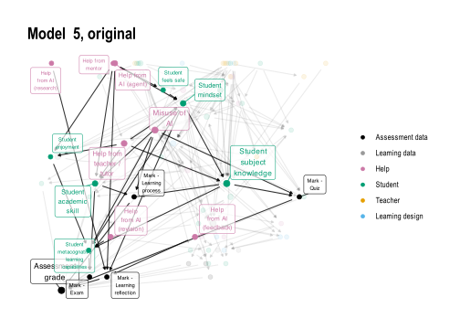
p_merged_highlighted_coarse + ggtitle(str_c("Model ",md_for_paper , ", coarsened")) 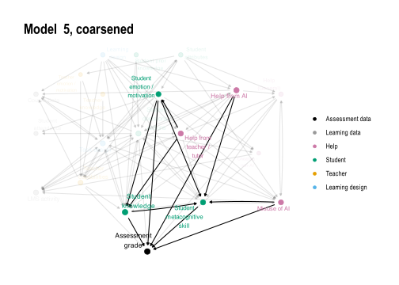
# ggsave(plot = p_merged_highlighted_fine,
# filename = "figures/FIG--merged-fine-with-1-highlighted.jpg",
# width = 8, height = 5, dpi = 600)
#
# ggsave(plot = p_merged_highlighted_coarse,
# filename = "figures/FIG--merged-coarse-with-1-highlighted.jpg",
# width = 8, height = 5, dpi = 600)# Generating all
p_fine_show_and_save <- function(n){
p_temp <- plot_highlighted_fine_graph(n, LEGEND_POSITION = "right") + ggtitle(paste0("DAG ", n, " highlighted"))
ggsave(plot = p_temp,
filename = paste0("figures/plt--merged-fine-with-", n, "-highlighted.png"),
width = 8, height = 5, dpi = 600)
return(p_temp)
}
p_coarse_show_and_save <- function(n, title = T){
p_temp <- plot_highlighted_coarse_graph(
n, LEGEND_POSITION = "right")
if (title) {
p_temp <- p_temp +
ggtitle(paste0("CDAG ", n, " highlighted"))
}
ggsave(plot = p_temp,
filename = paste0("figures/plt--merged-coarse-with-", n, "-highlighted.png"),
width = 8, height = 5, dpi = 600)
return(p_temp)
}p_coarse_show_and_save(2, title = F)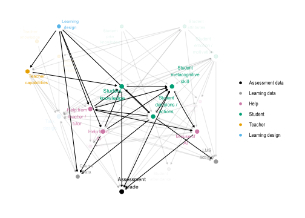
Note the appearance of feedback loops - these are between S.Cp and S.Kn, but also S.Cp and H.AI.evil. These metacognitive skills are clearly seen as important feedback processes in this system.
Most common node group patterns - nodes in at least half the models, then looking at the resulting graph of node-groups.
node_list_majority_of_models <-
all_nodes |>
count(name) |>
filter(n >= 4) |>
pull(name)
coarse_filtered_graph_temp <-
merged_all_graph |>
activate("nodes") |>
filter(name %in% node_list_majority_of_models)
coarse_filtered_graph <-
coarse_filtered_graph_temp |>
gcm_cluster_graph(code_node_group)Weighting by num of models instead This one uses only nodes that are in the majority of models, then coarsens the graph, then aggregates edges based on the number of models that they appear in. The edges must also appear in at least 2 models
node_list_majority_of_models <-
all_nodes |>
count(name) |>
filter(n >= 4) |>
pull(name)
coarse_filtered_graph_ng_filled <-
tbl_graph( # only nodes that are in most models (4 or more)
nodes = all_nodes |>
filter(name %in% node_list_majority_of_models) |>
mutate( # but then coarsen into node groups
node_group = code_node_group(name),
node_type = code_node_type(name)) |>
count(node_group, node_type) |>
rename(node_w = n),
edges = all_edges |> # Only edges between node groups...
mutate(across(from:to, code_node_group)) |>
distinct(Model, from, to) |>
count(from, to) |>
# filter(n > 1) |> # ...that occur in at least two models
filter(from %in% code_node_group(node_list_majority_of_models)) |>
filter(to %in% code_node_group(node_list_majority_of_models)) |>
rename(edge_w = n)) |>
activate("edges") |>
adorn_switches_exist(from, to) |>
activate("nodes") |>
inner_join(node_group_nice_name)All edges between node groups from the majority nodes
lyt_coarse_filtered_ng_full <- create_layout(
coarse_filtered_graph_ng_filled,
layout = "sugiyama")
p_top_node_groups_full <- ggraph(lyt_coarse_filtered_ng_full) +
geom_edge_fan(aes(edge_linetype = factor(switched), alpha = edge_w),
strength = 0.8,
arrow = arrow(length = unit(2, 'mm'), type = "closed"),
start_cap = circle(3, 'mm'),
end_cap = circle(3, 'mm')) +
geom_node_point(aes(colour = node_type, size = node_w)) +
scale_colour_manual(
values = node_type_colours,
limits = names(node_type_colours),
drop = FALSE
) +
theme_graph() +
scale_edge_alpha_continuous(range = c(0.15,0.8)) +
scale_alpha_continuous(range = c(0.2,0.9)) +
theme(legend.position = "none") +
scale_size(range = c(3,6)) +
geom_node_text(aes(label = str_wrap(nice_name, width = wrap_width), colour = node_type),
alpha = 0.9,
nudge_y = -.3,
repel = F) +
xlim(c(
min(lyt_coarse_filtered_ng_full$x) - 0.15,
max(lyt_coarse_filtered_ng_full$x) + 0.15))
p_top_node_groups_full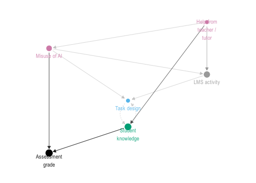
ggsave("figures/FIG--consensus-sub-model-full.jpg",
p_top_node_groups_full,
dpi = 900,
height = 4, width = 6)Filtered - edges must be in at least 2 models
lyt_coarse_filtered_ng_filtered <-
create_layout(
coarse_filtered_graph_ng_filled |>
activate("edges") |>
filter(edge_w > 1) |>
mutate(
switched = map_lgl(row_number(), function(i) {
from_i <- .E()$from[i]
to_i <- .E()$to[i]
any(from == to_i & to == from_i)
})
) ,
layout = "sugiyama") |>
select(-x, -y) |>
inner_join(lyt_coarse_filtered_ng_full |> select(x, y, node_group, node_type))
p_top_node_groups_filtered <-
ggraph(lyt_coarse_filtered_ng_filtered) +
geom_edge_fan(aes(edge_linetype = factor(switched), alpha = edge_w, ), # alpha = edge_w,
strength = 0.8,
arrow = arrow(length = unit(2, 'mm'), type = "closed"),
start_cap = circle(3, 'mm'),
end_cap = circle(3, 'mm')) +
geom_node_point(aes(colour = node_type, size = node_w)) +
scale_colour_manual(
values = node_type_colours,
limits = names(node_type_colours),
drop = FALSE
) +
theme_graph() +
scale_edge_alpha_continuous(range = c(0.15,0.8)) +
scale_alpha_continuous(range = c(0.2,0.9)) +
theme(legend.position = "none") +
scale_size(range = c(3,6)) +
geom_node_text(aes(label = str_wrap(nice_name, width = wrap_width), colour = node_type),
alpha = 0.9, nudge_y = -.3, repel = F) +
xlim(c(min(lyt_coarse_filtered_ng_filtered$x) - 0.15, max(lyt_coarse_filtered_ng_filtered$x) + 0.15))
p_top_node_groups_filtered
ggsave("figures/FIG--consensus-sub-model-filtered.jpg",
p_top_node_groups_filtered,
dpi = 900,
height = 4, width = 6)# all nodes
all_nodes_with_metrics |>
inner_join(name_node_nice_name) |>
inner_join(node_group_nice_name |> rename(g_nice_name = nice_name)) |>
select(name, nice_name, g_nice_name, node_group, Model, pagerank_no_outcome, pagerank, btw_rel_rank) |>
arrange(name, Model) |>
knitr::kable()| name | nice_name | g_nice_name | node_group | Model | pagerank_no_outcome | pagerank | btw_rel_rank |
|---|---|---|---|---|---|---|---|
| CD | Any system data | Course Data | CD.Str | M1 | 0.2598017 | 0.1254606 | 0.5000000 |
| CD.Att | Attendance | Student attendance | CD.Att | M4 | 0.0235946 | 0.0410063 | 0.5625000 |
| CD.Att | Attendance | Student attendance | CD.Att | M7 | 0.0348776 | 0.0360250 | 0.6500000 |
| CD.LMS | LMS activity | LMS activity | CD.LMS | M2 | 0.0489246 | 0.0601186 | 0.7272727 |
| CD.LMS | LMS activity | LMS activity | CD.LMS | M3 | 0.1242479 | 0.0777349 | 0.4000000 |
| CD.LMS | LMS activity | LMS activity | CD.LMS | M4 | 0.1146045 | 0.0678438 | 0.5625000 |
| CD.LMS | LMS activity | LMS activity | CD.LMS | M6 | 0.0679850 | 0.0647762 | 0.6666667 |
| CD.LMS | LMS activity | LMS activity | CD.LMS | M7 | 0.0403759 | 0.0398677 | 0.6500000 |
| CD.LMS | LMS activity | LMS activity | CD.LMS | M8 | 0.0576999 | 0.0576577 | 0.1428571 |
| CD.LMS.code | Code artifacts | LMS activity | CD.LMS | M7 | 0.0415103 | 0.0399127 | 0.6500000 |
| CD.LMS.write | Writing artifacts | LMS activity | CD.LMS | M7 | 0.0752913 | 0.0477832 | 0.6500000 |
| CD.Str | Course Data | Course Data | CD.Str | M2 | 0.0693898 | 0.0754642 | 0.7272727 |
| CD.Str | Course Data | Course Data | CD.Str | M3 | 0.0569482 | 0.0657501 | 0.4000000 |
| CD.Str | Course Data | Course Data | CD.Str | M6 | 0.0303390 | 0.0470410 | 0.6666667 |
| Grade | Assessment grade | Assessment grade | Grade | M1 | 0.0000000 | 0.1323841 | 0.5000000 |
| Grade | Assessment grade | Assessment grade | Grade | M2 | 0.0000000 | 0.1642797 | 0.7272727 |
| Grade | Assessment grade | Assessment grade | Grade | M3 | 0.0000000 | 0.0732885 | 0.4000000 |
| Grade | Assessment grade | Assessment grade | Grade | M4 | 0.0000000 | 0.0861895 | 0.5625000 |
| Grade | Assessment grade | Assessment grade | Grade | M5 | 0.0000000 | 0.1730290 | 0.5294118 |
| Grade | Assessment grade | Assessment grade | Grade | M6 | 0.0000000 | 0.1582891 | 0.6666667 |
| Grade | Assessment grade | Assessment grade | Grade | M7 | 0.0000000 | 0.1275476 | 0.6500000 |
| Grade | Assessment grade | Assessment grade | Grade | M8 | 0.0000000 | 0.1531532 | 0.7142857 |
| Grade.Coms | Mark - Communication | Assessment grade | Grade | M7 | 0.0562769 | 0.0477944 | 0.5500000 |
| Grade.Exam | Mark - Exam | Assessment grade | Grade | M5 | 0.1621565 | 0.0893094 | 0.2941176 |
| Grade.Interp | Mark - Interpretation | Assessment grade | Grade | M7 | 0.1158678 | 0.0708185 | 0.5500000 |
| Grade.Proc | Mark - Learning process | Assessment grade | Grade | M5 | 0.0762812 | 0.0573829 | 0.3529412 |
| Grade.Quiz | Mark - Quiz | Assessment grade | Grade | M5 | 0.0520260 | 0.0453547 | 0.4117647 |
| Grade.Ref | Mark - Learning reflection | Assessment grade | Grade | M5 | 0.1193653 | 0.0888427 | 0.2352941 |
| Grade.Tech | Mark - Technical | Assessment grade | Grade | M7 | 0.0681343 | 0.0531444 | 0.4500000 |
| H | Help (general) | Help (General) | H.Gen | M1 | 0.0534232 | 0.0643216 | 0.3000000 |
| H | Help (general) | Help (General) | H.Gen | M6 | 0.0764032 | 0.0793816 | 0.4166667 |
| H | Help (general) | Help (General) | H.Gen | M8 | 0.0709553 | 0.0672673 | 0.0000000 |
| H.AI.Agent | Help from AI (agent) | Help from AI | H.AI.good | M5 | 0.0293150 | 0.0325841 | 0.5294118 |
| H.AI.Agent | Help from AI (agent) | Help from AI | H.AI.good | M8 | 0.0311891 | 0.0384384 | 0.7142857 |
| H.AI.Fb | Help from AI (feedback) | Help from AI | H.AI.good | M5 | 0.0293150 | 0.0325841 | 0.5294118 |
| H.AI.Fb | Help from AI (feedback) | Help from AI | H.AI.good | M7 | 0.0367908 | 0.0366855 | 0.1500000 |
| H.AI.Res | Help from AI (research) | Help from AI | H.AI.good | M5 | 0.0293150 | 0.0325841 | 0.5294118 |
| H.AI.Study | Help from AI (revision) | Help from AI | H.AI.good | M5 | 0.0293150 | 0.0325841 | 0.5294118 |
| H.AI.Study | Help from AI (revision) | Help from AI | H.AI.good | M7 | 0.0367908 | 0.0366855 | 0.4000000 |
| H.AI.evil | Misuse of AI | Misuse of AI | H.AI.evil | M2 | 0.2333173 | 0.0929255 | 0.6363636 |
| H.AI.evil | Misuse of AI | Misuse of AI | H.AI.evil | M3 | 0.0202678 | 0.0380242 | 0.4000000 |
| H.AI.evil | Misuse of AI | Misuse of AI | H.AI.evil | M4 | 0.0314084 | 0.0497933 | 0.5000000 |
| H.AI.evil | Misuse of AI | Misuse of AI | H.AI.evil | M5 | 0.0293150 | 0.0325841 | 0.5294118 |
| H.AI.evil | Misuse of AI | Misuse of AI | H.AI.evil | M6 | 0.1210500 | 0.0841711 | 0.5833333 |
| H.AI.evil | Misuse of AI | Misuse of AI | H.AI.evil | M8 | 0.0311891 | 0.0384384 | 0.7142857 |
| H.AI.evil.code | Misuse of AI (code) | Misuse of AI | H.AI.evil | M7 | 0.0367908 | 0.0366855 | 0.1000000 |
| H.AI.evil.write | Misuse from AI (write) | Misuse of AI | H.AI.evil | M7 | 0.0367908 | 0.0366855 | 0.0500000 |
| H.AI.good | Help from AI (to learn) | Help from AI | H.AI.good | M2 | 0.0477452 | 0.0595770 | 0.2727273 |
| H.AI.good | Help from AI (to learn) | Help from AI | H.AI.good | M4 | 0.0235946 | 0.0410063 | 0.1875000 |
| H.AI.good | Help from AI (to learn) | Help from AI | H.AI.good | M6 | 0.0885786 | 0.0709408 | 0.2500000 |
| H.Ment | Help from mentor | Help from teacher / tutor | H.Tut | M5 | 0.0293150 | 0.0325841 | 0.5294118 |
| H.Peer | Help from peers | Help from teacher / tutor | H.Tut | M2 | 0.0477452 | 0.0595770 | 0.4545455 |
| H.Peer | Help from peers | Help from teacher / tutor | H.Tut | M3 | 0.0202678 | 0.0380242 | 0.4000000 |
| H.Peer | Help from peers | Help from teacher / tutor | H.Tut | M4 | 0.0284131 | 0.0453998 | 0.3125000 |
| H.Tut | Help from teacher / tutor | Help from teacher / tutor | H.Tut | M3 | 0.2051369 | 0.0891319 | 0.1333333 |
| H.Tut | Help from teacher / tutor | Help from teacher / tutor | H.Tut | M4 | 0.0284131 | 0.0453998 | 0.3750000 |
| H.Tut | Help from teacher / tutor | Help from teacher / tutor | H.Tut | M5 | 0.0293150 | 0.0325841 | 0.5294118 |
| H.Tut | Help from teacher / tutor | Help from teacher / tutor | H.Tut | M8 | 0.0311891 | 0.0384384 | 0.7142857 |
| H.Tut.Fb | Feedback from teacher / tutor | Help from teacher / tutor | H.Tut | M2 | 0.0489246 | 0.0601186 | 0.3636364 |
| H.other.evil | Cheating - non-AI | Cheating - non-AI | H.Cheat | M7 | 0.0458741 | 0.0437103 | 0.2000000 |
| LD | Learning design | Learning design | LD.Gen | M2 | 0.0408079 | 0.0541609 | 0.7272727 |
| LD.AIguide | Guidance on AI use | Learning design | LD.Gen | M6 | 0.0303390 | 0.0470410 | 0.6666667 |
| LD.Other | Other learning design | Learning design | LD.Gen | M8 | 0.0311891 | 0.0384384 | 0.7142857 |
| LD.Task | Task design | Task design | LD.Task | M1 | 0.1516042 | 0.1313233 | 0.0000000 |
| LD.Task | Task design | Task design | LD.Task | M3 | 0.0863070 | 0.1109038 | 0.0666667 |
| LD.Task | Task design | Task design | LD.Task | M6 | 0.0561272 | 0.0705615 | 0.1666667 |
| LD.Task | Task design | Task design | LD.Task | M8 | 0.0444445 | 0.0480480 | 0.2857143 |
| LD.Task.Code | Coding task design | Task design | LD.Task | M8 | 0.0601301 | 0.0560561 | 0.3571429 |
| LD.Task.Grp | Groupwork task design | Task design | LD.Task | M8 | 0.1845208 | 0.1225225 | 0.0714286 |
| LD.Task.Prac | Practical task design | Task design | LD.Task | M8 | 0.0601301 | 0.0560561 | 0.3571429 |
| LD.Task.Write | Writing task design | Task design | LD.Task | M8 | 0.0601301 | 0.0560561 | 0.3571429 |
| S.Act | Student decisions / actions | Student decisions / actions | S.Act | M2 | 0.0477452 | 0.0595770 | 0.1818182 |
| S.Act | Student decisions / actions | Student decisions / actions | S.Act | M3 | 0.0260103 | 0.0443615 | 0.3333333 |
| S.Act | Student decisions / actions | Student decisions / actions | S.Act | M6 | 0.1525928 | 0.1031866 | 0.0000000 |
| S.Act.AIstrat | Student AI strategy | Student decisions / actions | S.Act | M7 | 0.0513724 | 0.0475530 | 0.0000000 |
| S.Act.Fb | Student acts on feedback | Student decisions / actions | S.Act | M4 | 0.1822852 | 0.0870438 | 0.2500000 |
| S.Act.Fb | Student acts on feedback | Student decisions / actions | S.Act | M6 | 0.1600429 | 0.0728376 | 0.0833333 |
| S.Act.Frm | Student does formative tasks | Student decisions / actions | S.Act | M4 | 0.2263979 | 0.1307823 | 0.0000000 |
| S.Act.Perf | Student performance on task | Student decisions / actions | S.Act | M3 | 0.2006032 | 0.1410574 | 0.0000000 |
| S.Act.Time | Student commits time | Student decisions / actions | S.Act | M7 | 0.0423690 | 0.0422693 | 0.2500000 |
| S.Aff.Hsk | Student help seeker | Student emotion / motivation | S.EM | M4 | 0.0235946 | 0.0410063 | 0.4375000 |
| S.Aff.Integ | Student acting with integrity | Student emotion / motivation | S.EM | M1 | 0.0440604 | 0.0571748 | 0.5000000 |
| S.Aff.Joy | Student enjoyment | Student emotion / motivation | S.EM | M5 | 0.0417738 | 0.0407302 | 0.4705882 |
| S.Aff.MindSet | Student mindset | Student emotion / motivation | S.EM | M4 | 0.0183854 | 0.0351482 | 0.5625000 |
| S.Aff.MindSet | Student mindset | Student emotion / motivation | S.EM | M5 | 0.0719866 | 0.0590588 | 0.0000000 |
| S.Aff.MindSet | Student mindset | Student emotion / motivation | S.EM | M7 | 0.0258742 | 0.0307413 | 0.6500000 |
| S.Aff.Safe | Student feels safe | Student emotion / motivation | S.EM | M5 | 0.0355444 | 0.0366572 | 0.5294118 |
| S.Att.Eq | Student equity group | Student attributes | S.Att | M6 | 0.0541931 | 0.0646813 | 0.5000000 |
| S.Att.Nro | Student neuro-divergent | Student attributes | S.Att | M4 | 0.0183854 | 0.0351482 | 0.5625000 |
| S.Att.SocCap | Student social capital | Student attributes | S.Att | M1 | 0.0440604 | 0.0571748 | 0.5000000 |
| S.Cp.EvJdg | Student evaluative judgement | Student metacognitive skill | S.Cp | M4 | 0.0183854 | 0.0351482 | 0.5625000 |
| S.Cp.Fb | Student feedback literacy | Student metacognitive skill | S.Cp | M4 | 0.0678011 | 0.0842093 | 0.0625000 |
| S.Cp.Grp | Student groupwork capability | Student metacognitive skill | S.Cp | M8 | 0.2169727 | 0.1173173 | 0.2142857 |
| S.Cp.Ind | Student individual work capability | Student metacognitive skill | S.Cp | M8 | 0.0601301 | 0.0560561 | 0.5714286 |
| S.Cp.Lrn | Student metacognative learning capabilities | Student metacognitive skill | S.Cp | M5 | 0.1277487 | 0.0893942 | 0.0588235 |
| S.Cp.SRL | Student SRL | Student metacognitive skill | S.Cp | M2 | 0.2101735 | 0.1149792 | 0.0909091 |
| S.Cp.WrkLd | Student workload pressure | Student metacognitive skill | S.Cp | M1 | 0.0820852 | 0.0795087 | 0.3000000 |
| S.Cp.WrkLd | Student workload pressure | Student metacognitive skill | S.Cp | M4 | 0.0183854 | 0.0351482 | 0.5625000 |
| S.Cp.WrkLd | Student workload pressure | Student metacognitive skill | S.Cp | M7 | 0.0258742 | 0.0307413 | 0.6500000 |
| S.Kn | Student subject knowledge | Student knowledge | S.Kn | M1 | 0.0894701 | 0.0893356 | 0.2000000 |
| S.Kn | Student subject knowledge | Student knowledge | S.Kn | M2 | 0.1574813 | 0.1396450 | 0.0000000 |
| S.Kn | Student subject knowledge | Student knowledge | S.Kn | M3 | 0.1328617 | 0.0872409 | 0.2000000 |
| S.Kn | Student subject knowledge | Student knowledge | S.Kn | M4 | 0.1579660 | 0.1045786 | 0.1250000 |
| S.Kn | Student subject knowledge | Student knowledge | S.Kn | M5 | 0.0508416 | 0.0440395 | 0.1764706 |
| S.Kn | Student subject knowledge | Student knowledge | S.Kn | M6 | 0.0995386 | 0.0768209 | 0.2500000 |
| S.Kn | Student subject knowledge | Student knowledge | S.Kn | M8 | 0.0601301 | 0.0560561 | 0.5714286 |
| S.Kn.Aca | Student academic skill | Student knowledge | S.Kn | M3 | 0.0260103 | 0.0443615 | 0.2666667 |
| S.Kn.Aca | Student academic skill | Student knowledge | S.Kn | M5 | 0.0570710 | 0.0481125 | 0.1176471 |
| S.Kn.Aca | Student academic skill | Student knowledge | S.Kn | M6 | 0.0628104 | 0.0602712 | 0.6666667 |
| S.Kn.Coms | Student communications knowledge | Student knowledge | S.Kn | M7 | 0.0470086 | 0.0437554 | 0.5000000 |
| S.Kn.Interp | Student interpretation knowledge | Student knowledge | S.Kn | M7 | 0.0936112 | 0.0679259 | 0.2500000 |
| S.Kn.Prior | Student prior knowledge | Student prior knowledge | S.Kn.Prior | M4 | 0.0183854 | 0.0351482 | 0.5625000 |
| S.Kn.Prior | Student prior knowledge | Student prior knowledge | S.Kn.Prior | M7 | 0.0258742 | 0.0307413 | 0.6500000 |
| S.Kn.Tech | Student technical knowledge | Student knowledge | S.Kn | M7 | 0.0626447 | 0.0529267 | 0.3500000 |
| T.Aff.Integ | Teacher acts with integrity | Teacher emotion / motivation | T.EM | M1 | 0.0534232 | 0.0643216 | 0.5000000 |
| T.Cp.Inst | Teacher instruction quality | Teacher capabilities | T.Cp | M2 | 0.0477452 | 0.0595770 | 0.4545455 |
| T.Cp.KnStu | Teacher knows students | Teacher capabilities | T.Cp | M3 | 0.0202678 | 0.0380242 | 0.4000000 |
| T.Cp.Mark | Teacher reliably marks | Teacher capabilities | T.Cp | M1 | 0.1780112 | 0.1418202 | 0.1000000 |
| T.Cp.Sub | Teacher subject expertise | Teacher capabilities | T.Cp | M3 | 0.0202678 | 0.0380242 | 0.4000000 |
| T.Cp.WrkLd | Teacher workload pressure | Teacher capabilities | T.Cp | M1 | 0.0440604 | 0.0571748 | 0.5000000 |
| T.Kn.AI | Teacher AI literacy | Teacher knowledge | T.Kn | M3 | 0.0202678 | 0.0380242 | 0.4000000 |
| T.Kn.Ass | Teacher assessment literacy | Teacher knowledge | T.Kn | M3 | 0.0202678 | 0.0380242 | 0.4000000 |
all_node_groups_aggregated_metrics <-
all_nodes_with_metrics |>
group_by(node_group) |>
mutate(
measurability_node_group = coarsen_node_measurability(measurability)
) |>
group_by(Model, node_group, node_type, measurability_node_group) |>
summarise(
p_traced = mean(measurability == "DW"),
measurability_metric = (3 * mean(measurability == "DW") +
2 * mean(measurability == "O") +
mean(measurability == "PO")) / 3,
pagerank = sum(pagerank),
pagerank_no_outcome = sum(pagerank_no_outcome),
btw_rel = sum(btw_rel),
.groups = "drop_last") |>
group_by(node_group, node_type) |>
mutate(
n = n(),
overall_pagerank = sum(pagerank / 8),
overall_pagerank_no_outcome = sum(pagerank_no_outcome / 8),
overall_btw = sum(btw_rel)) |>
ungroup()m_pal <- c("darkslateblue",
"dodgerblue","orange","deeppink")
d_ng_measurability_importance <-
all_node_groups_aggregated_metrics |>
filter(node_group != "Grade") |>
inner_join(node_group_nice_name, by = "node_group") |>
mutate(node_group = nice_name) |>
group_by(node_group) |>
mutate(m_group = mean(measurability_metric)) |>
ungroup() |>
mutate(node_group = fct_reorder(node_group, pagerank_no_outcome)) |>
arrange(desc(node_group)) |>
filter(n > 2) # need at least half the models with node group
p_top_node_pagerank_no_outcome_measurability_discrete <-
d_ng_measurability_importance |>
mutate(
measurability = case_when(
measurability_metric < (1/6) ~ "Latent",
measurability_metric < 0.5 ~ "Potentially observable",
measurability_metric < (5/6) ~ "Observable",
TRUE ~ "Data warehouse") |>
factor(levels = c(
"Latent",
"Potentially observable",
"Observable",
"Data warehouse"
))) |>
arrange(Model, node_group) |>
ggplot(aes(x = pagerank_no_outcome, y = node_group)) +
geom_boxplot(aes(fill = m_group), colour = "lightgray", size = 0.4, alpha = 0.7) +
# geom_line(aes(x = pagerank_no_outcome, y = node_group, group = Model), alpha = 0.6) +
geom_point(aes(colour = measurability), alpha = 0.9) +
scale_color_manual(values = m_pal, # or retro four
labels = c("Latent","Potentially\nobservable", "Observable", "Data\nWarehouse"),
name = ""
) +
scale_fill_gradientn(
colours = m_pal,
breaks = c(0, 1/3, 2/3, 5/6)
) +
theme_minimal() +
ylab("Node group") +
xlab("Node groups combined Centrality (Pagerank)") +
# geom_rug(aes(colour = m_dist_to_trace), alpha = 0.6, sides = "b") +
# coord_cartesian(clip = "off") +
guides(fill = "none",
color = guide_legend(nrow = 1, byrow = FALSE)) +
theme(legend.position = "bottom",
legend.direction = "vertical",
legend.justification = "left",
legend.text = element_text(size = 8),
legend.key.width = unit(1, "cm"),
axis.ticks.y = element_blank(),
axis.line.y = element_blank(),
panel.grid.major.y = element_blank(),
panel.grid.minor.y = element_blank())
p_top_node_pagerank_no_outcome_measurability_discrete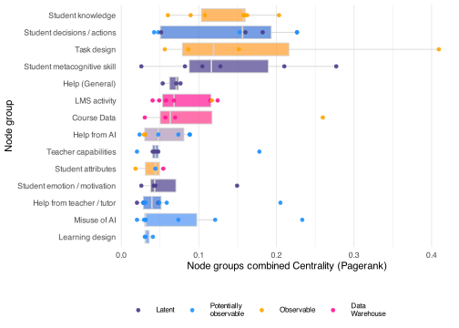
#
# # extract legend
# leg <- get_legend(p_top_node_pagerank_no_outcome_measurability_discrete)
#
# # arrange with relative heights (legend gets a small slice)
# p_node_importance_with_measurability <- (wrap_elements(leg) /
# (p_top_node_pagerank_no_outcome_measurability_discrete + theme(legend.position = "none"))) +
# plot_layout(heights = c(0.2, 1))
ggsave("figures/FIG--node_pagerank_no_outcome_measurability.jpg",
p_top_node_pagerank_no_outcome_measurability_discrete,
width = 5,
height = 4,
dpi = 900)As table
all_nodes_with_metrics |>
distinct(name, measurability) |>
janitor::tabyl(measurability) |>
janitor::adorn_totals("row") |>
knitr::kable(caption = "Proportions of nodes by measurability")| measurability | n | percent |
|---|---|---|
| DW | 5 | 0.0694444 |
| O | 17 | 0.2361111 |
| PO | 28 | 0.3888889 |
| L | 22 | 0.3055556 |
| Total | 72 | 1.0000000 |
Node group measurability was coded according to:
# could add distance to traced
node_groups_table <-
all_nodes_with_metrics |>
inner_join(name_node_nice_name, by = "name") |>
mutate(name = nice_name) |>
left_join(
node_group_nice_name |>
rename(ng_nice_name = nice_name), by = "node_group") |>
mutate(node_group = ng_nice_name) |>
group_by(node_type, node_group) |>
mutate(measurability = coarsen_node_measurability(measurability)) |>
group_by(node_type, node_group, measurability) |>
summarise(
nodes = str_c(unique(name), collapse = "; "),
n = sum(node_w),
pagerank = round(sum(pagerank_no_outcome) / 8, 2)
# ,btw = round(sum(btw_rel), 3)
) |>
mutate(pagerank = if_else(node_group == "Assessment grade", NA, pagerank)) |>
# mutate(node_type = case_when(
# node_type == "L" ~ "Learning Design",
# node_type == "S" ~ "Student",
# node_type == "T" ~ "Teacher",
# node_type == "C" ~ "Course Data",
# node_type == "G" ~ "Grade Data",
# node_type == "H" ~ "Help"
# )) |>
arrange(desc(n), desc(pagerank)) |>
select(node_type, node_group, nodes, n, measurability, pagerank) |>
ungroup()
node_groups_table |>
arrange(node_type, node_group) |>
knitr::kable()| node_type | node_group | nodes | n | measurability | pagerank |
|---|---|---|---|---|---|
| Assessment data | Assessment grade | Assessment grade; Mark - Exam; Mark - Learning process; Mark - Quiz; Mark - Learning reflection; Mark - Communication; Mark - Interpretation; Mark - Technical | 15 | Observable | NA |
| Learning data | Course Data | Any system data; Course Data | 4 | Observable | 0.05 |
| Learning data | LMS activity | LMS activity; Code artifacts; Writing artifacts | 8 | Observable | 0.07 |
| Learning data | Student attendance | Attendance | 2 | Observable | 0.01 |
| Help | Cheating - non-AI | Cheating - non-AI | 1 | Latent | 0.01 |
| Help | Help (General) | Help (general) | 3 | Latent | 0.03 |
| Help | Help from AI | Help from AI (to learn); Help from AI (feedback); Help from AI (research); Help from AI (revision) | 8 | Potentially observable | 0.04 |
| Help | Help from AI | Help from AI (agent) | 2 | Observable | 0.01 |
| Help | Help from teacher / tutor | Feedback from teacher / tutor; Help from teacher / tutor; Help from mentor | 6 | Potentially observable | 0.05 |
| Help | Help from teacher / tutor | Help from peers | 3 | Latent | 0.01 |
| Help | Misuse of AI | Misuse of AI; Misuse of AI (code); Misuse from AI (write) | 8 | Potentially observable | 0.07 |
| Student | Student attributes | Student neuro-divergent; Student equity group | 2 | Observable | 0.01 |
| Student | Student attributes | Student social capital | 1 | Potentially observable | 0.01 |
| Student | Student decisions / actions | Student decisions / actions; Student performance on task; Student does formative tasks; Student commits time | 6 | Potentially observable | 0.09 |
| Student | Student decisions / actions | Student acts on feedback; Student AI strategy | 3 | Latent | 0.05 |
| Student | Student emotion / motivation | Student acting with integrity; Student help seeker; Student mindset; Student enjoyment; Student feels safe | 7 | Latent | 0.03 |
| Student | Student knowledge | Student subject knowledge; Student academic skill; Student communications knowledge; Student interpretation knowledge; Student technical knowledge | 13 | Potentially observable | 0.14 |
| Student | Student metacognitive skill | Student workload pressure; Student SRL; Student evaluative judgement; Student feedback literacy; Student metacognative learning capabilities; Student groupwork capability; Student individual work capability | 9 | Latent | 0.10 |
| Student | Student prior knowledge | Student prior knowledge | 2 | Potentially observable | 0.01 |
| Teacher | Teacher capabilities | Teacher workload pressure; Teacher instruction quality; Teacher knows students; Teacher subject expertise | 4 | Latent | 0.02 |
| Teacher | Teacher capabilities | Teacher reliably marks | 1 | Potentially observable | 0.02 |
| Teacher | Teacher emotion / motivation | Teacher acts with integrity | 1 | Latent | 0.01 |
| Teacher | Teacher knowledge | Teacher AI literacy; Teacher assessment literacy | 2 | Potentially observable | 0.01 |
| Learning design | Learning design | Learning design; Guidance on AI use; Other learning design | 3 | Potentially observable | 0.01 |
| Learning design | Task design | Task design; Coding task design; Groupwork task design; Practical task design; Writing task design | 8 | Observable | 0.09 |
all_nodes_with_metrics |>
distinct(name) |>
nrow() |>
paste("distinct nodes\n") |>
cat()72 distinct nodes
all_nodes_with_metrics |>
distinct(node_group) |>
nrow() |>
paste("node groups.\n") |>
cat()20 node groups.
all_nodes_with_metrics |>
distinct(name, measurability) |> count(measurability) |>
knitr::kable()| measurability | n |
|---|---|
| DW | 5 |
| O | 17 |
| PO | 28 |
| L | 22 |
What about grouping by the node category first, so it’s hierarchical?
node_types_table <-
node_groups_table |>
group_by(node_type) |>
mutate(nt = sum(n)) |>
ungroup() |>
arrange(desc(nt), desc(n)) |>
select(node_type, nt, node_group, nodes, n, measurability, pagerank)
# |>
# mutate(node_type = str_c(node_type, " (", nt, ")")) |>
# select(-nt)
node_types_table |>
knitr::kable()| node_type | nt | node_group | nodes | n | measurability | pagerank |
|---|---|---|---|---|---|---|
| Student | 43 | Student knowledge | Student subject knowledge; Student academic skill; Student communications knowledge; Student interpretation knowledge; Student technical knowledge | 13 | Potentially observable | 0.14 |
| Student | 43 | Student metacognitive skill | Student workload pressure; Student SRL; Student evaluative judgement; Student feedback literacy; Student metacognative learning capabilities; Student groupwork capability; Student individual work capability | 9 | Latent | 0.10 |
| Student | 43 | Student emotion / motivation | Student acting with integrity; Student help seeker; Student mindset; Student enjoyment; Student feels safe | 7 | Latent | 0.03 |
| Student | 43 | Student decisions / actions | Student decisions / actions; Student performance on task; Student does formative tasks; Student commits time | 6 | Potentially observable | 0.09 |
| Student | 43 | Student decisions / actions | Student acts on feedback; Student AI strategy | 3 | Latent | 0.05 |
| Student | 43 | Student attributes | Student neuro-divergent; Student equity group | 2 | Observable | 0.01 |
| Student | 43 | Student prior knowledge | Student prior knowledge | 2 | Potentially observable | 0.01 |
| Student | 43 | Student attributes | Student social capital | 1 | Potentially observable | 0.01 |
| Help | 31 | Misuse of AI | Misuse of AI; Misuse of AI (code); Misuse from AI (write) | 8 | Potentially observable | 0.07 |
| Help | 31 | Help from AI | Help from AI (to learn); Help from AI (feedback); Help from AI (research); Help from AI (revision) | 8 | Potentially observable | 0.04 |
| Help | 31 | Help from teacher / tutor | Feedback from teacher / tutor; Help from teacher / tutor; Help from mentor | 6 | Potentially observable | 0.05 |
| Help | 31 | Help (General) | Help (general) | 3 | Latent | 0.03 |
| Help | 31 | Help from teacher / tutor | Help from peers | 3 | Latent | 0.01 |
| Help | 31 | Help from AI | Help from AI (agent) | 2 | Observable | 0.01 |
| Help | 31 | Cheating - non-AI | Cheating - non-AI | 1 | Latent | 0.01 |
| Assessment data | 15 | Assessment grade | Assessment grade; Mark - Exam; Mark - Learning process; Mark - Quiz; Mark - Learning reflection; Mark - Communication; Mark - Interpretation; Mark - Technical | 15 | Observable | NA |
| Learning data | 14 | LMS activity | LMS activity; Code artifacts; Writing artifacts | 8 | Observable | 0.07 |
| Learning data | 14 | Course Data | Any system data; Course Data | 4 | Observable | 0.05 |
| Learning data | 14 | Student attendance | Attendance | 2 | Observable | 0.01 |
| Learning design | 11 | Task design | Task design; Coding task design; Groupwork task design; Practical task design; Writing task design | 8 | Observable | 0.09 |
| Learning design | 11 | Learning design | Learning design; Guidance on AI use; Other learning design | 3 | Potentially observable | 0.01 |
| Teacher | 8 | Teacher capabilities | Teacher workload pressure; Teacher instruction quality; Teacher knows students; Teacher subject expertise | 4 | Latent | 0.02 |
| Teacher | 8 | Teacher knowledge | Teacher AI literacy; Teacher assessment literacy | 2 | Potentially observable | 0.01 |
| Teacher | 8 | Teacher capabilities | Teacher reliably marks | 1 | Potentially observable | 0.02 |
| Teacher | 8 | Teacher emotion / motivation | Teacher acts with integrity | 1 | Latent | 0.01 |
How often do causal paths point in the same direction?
Note on Model 8. This is a structurally different system, in which any misuse of AI effects are deliberately mediated through the task design. This is a case where the causal structure should be different to the others - we are describing a different system due to deliberate design choices.
# Nodes in fine graph
n_possible_edges <- nrow(all_possible_edges)
n_edges <- nrow(all_edges_in_models_with_metrics)
prob_edge_inclusion_given_existence <-
mean(all_edges_in_models_with_metrics$p_direct)
prob_universal_inclusion_given_existence <-
mean(all_edges_in_models_with_metrics$p_direct == 1)
prob_descendant_inclusion_given_existence <-
mean(all_edges_in_models_with_metrics$p_descendant)
prob_universal_descendant_inclusion_given_existence <-
mean(all_edges_in_models_with_metrics$p_descendant == 1)
prob_universal_descendant_inclusion_given_descendant_existance <-
all_edges_sum |>
filter(p_descendant > 0) |>
mutate(universal_descendant = p_descendant == 1) |>
pull(universal_descendant) |>
mean()# Checking the above, using the method implemented with the cluster graphs - checks out!
all_nodes_fine_graphs <-
tdags |>
imap(
\(g, m)
gcm_nodelist(g)
) |>
list_rbind(names_to = "Model")
all_possible_edges_fine_graphs <-
tdags |>
imap(
\(g, m)
gcm_possible_edges(g)
) |>
list_rbind(names_to = "Model") |>
filter(from != to)
all_edges_fine_graphs <-
tdags |>
imap(
\(g, m)
gcm_edgelist(g)
) |>
list_rbind(names_to = "Model")
all_descendants_fine_graphs <-
tdags |>
imap(
\(g, m)
gcm_all_descendants_edge_list(g)
) |>
list_rbind(names_to = "Model")
all_edges_summary_fine_graphs <-
all_possible_edges_fine_graphs |>
left_join(
all_edges_fine_graphs |>
mutate(is_edge = TRUE),
by = c("Model", "from", "to")) |>
mutate(is_edge = replace_na(is_edge, FALSE)) |>
left_join(
all_descendants_fine_graphs |>
mutate(is_descendant = TRUE),
by = c("Model", "from", "to")) |>
mutate(is_descendant = replace_na(is_descendant, FALSE)) |>
group_by(from, to) |>
summarise(
n_possible = n_distinct(Model),
n_edge = sum(is_edge),
n_descendant = sum(is_descendant),
.groups = "drop"
)
n_possible_edges_fine <- nrow(all_possible_edges_fine_graphs)
n_edges_fine <- nrow(all_edges_fine_graphs)
prob_edge_inclusion_given_existence_fine_graphs <-
all_edges_summary_fine_graphs |>
filter(n_edge > 0) |>
mutate(p_inc = n_edge / n_possible) |>
pull(p_inc) |>
mean()
prob_descendant_inclusion_given_existence_fine_graphs <-
all_edges_summary_fine_graphs |>
filter(n_edge > 0) |>
mutate(p_inc = n_descendant / n_possible) |>
pull(p_inc) |>
mean()We examine the 188 edges from 1969 possible edges across the 8 models, and in addition include the ancestor - descendant pairs. From this we define a few events:
We now perform the same analysis, but for the node-group cluster DAGs. It is worth noting that these numbers are lower due to the node clustering - it is much more likely that common nodes are found across graphs.
# Nodes in cluster graph
all_nodes_cluster_graphs <-
CDAGs |>
imap(
\(g, m)
gcm_nodelist(g)
) |>
list_rbind(names_to = "Model")
all_possible_edges_cluster_graphs <-
CDAGs |>
imap(
\(g, m)
gcm_possible_edges(g)
) |>
list_rbind(names_to = "Model") |>
filter(from != to)
all_edges_cluster_graphs <-
CDAGs |>
imap(
\(g, m)
gcm_edgelist(g)
) |>
list_rbind(names_to = "Model")
all_descendants_cluster_graphs <-
CDAGs |>
imap(
\(g, m)
gcm_all_descendants_edge_list(g)
) |>
list_rbind(names_to = "Model")
all_edges_summary_cluster_graphs <-
all_possible_edges_cluster_graphs |>
left_join(
all_edges_cluster_graphs |>
mutate(is_edge = TRUE),
by = c("Model", "from", "to")) |>
mutate(is_edge = replace_na(is_edge, FALSE)) |>
left_join(
all_descendants_cluster_graphs |>
mutate(is_descendant = TRUE),
by = c("Model", "from", "to")) |>
mutate(is_descendant = replace_na(is_descendant, FALSE)) |>
group_by(from, to) |>
summarise(
n_possible = n_distinct(Model),
n_edge = sum(is_edge),
n_descendant = sum(is_descendant),
.groups = "drop"
)
n_possible_edges_cluster <- nrow(all_possible_edges_cluster_graphs)
n_edges_cluster <- nrow(all_edges_cluster_graphs)
prob_edge_inclusion_given_existence_cluster_graphs <-
all_edges_summary_cluster_graphs |>
filter(n_edge > 0) |>
mutate(p_inc = n_edge / n_possible) |>
pull(p_inc) |>
mean()
prob_descendant_inclusion_given_existence_cluster_graphs <-
all_edges_summary_cluster_graphs |>
filter(n_edge > 0) |>
mutate(p_inc = n_descendant / n_possible) |>
pull(p_inc) |>
mean()This computes two metrics, the loss ratio of conditional independence relationships (ci_loss) and the rate of introduction of spurious ancestors when coarsening. CI loss indicates how often a conditional independence relationship in the fine graph did not have its analogue in the coarsened graph. Spurious ancestors indicates the rate at which merged nodes introduced new ancestors in the cluster DAG - violating L1 consistency (CITE - Annan???)
# slow
if (FALSE) {
clustering_L1_degradation <-
tdags |>
imap(
\(g, m)
{
message(str_c(m, ":"))
tibble(L1_degradation = gcm_cluster_L1_degradation(
g, code_node_group,
max_cond = 4)$degradation
)}) |>
list_rbind(names_to = "Model")
saveRDS(clustering_L1_degradation, "cache/L1-degradation.RDS")
} else {
clustering_L1_degradation <-readRDS("cache/L1-degradation.RDS")
}clustering_L1_degradation |>
knitr::kable(
caption = "L1-consistency metrics when coarsening GCMs",
digits = 4)| Model | L1_degradation |
|---|---|
| M1 | 0.0706 |
| M2 | 0.0000 |
| M3 | 0.0130 |
| M4 | 0.0025 |
| M5 | 0.0040 |
| M6 | 0.0021 |
| M7 | 0.0031 |
| M8 | 0.0473 |
This computes a single error metric - the % of lost identifiable pairs when coarsening. So this is where the \(P(Y|do(X))\) is identifiable in the fine graph but \(P(\varphi(Y)|do(\varphi(X)))\) is not identifiable in the coarsened cluster graph.
if (FALSE) {
# adj_type = "all" for coverage, but slow
# adj_type = "optimal" for best efficient estimation
clustering_L2_degradation <-
tdags |>
imap(
\(g,m)
{
message(str_c(m, ":"))
tibble(
L2_degradation = gcm_cluster_L2_degradation(
g, code_node_group,
adj_type = "all")$degradation
)}) |>
list_rbind(names_to = "Model")
saveRDS(clustering_L2_degradation, "cache/L2-degradation.RDS")
} else {
clustering_L2_degradation <- readRDS("cache/L2-degradation.RDS")
}clustering_L2_degradation |>
knitr::kable(
caption = "L2-consistency metrics when coarsening GCMs",
digits = 4)| Model | L2_degradation |
|---|---|
| M1 | 0.4557 |
| M2 | 0.2078 |
| M3 | 0.7835 |
| M4 | 0.6606 |
| M5 | 0.4242 |
| M6 | 0.4962 |
| M7 | 0.1579 |
| M8 | 0.3333 |
compute_dist_matrix <- function(
model_list, # list of models
.df, # function that computes distance between two models
symmetric = TRUE,
impute_undefined = FALSE) {
n <- length(model_list)
nm <- names(model_list)
D <- matrix(0, n, n, dimnames = list(nm, nm))
if (symmetric) {
# fill upper triangle, mirror, zero diagonal
for (i in seq_len(n - 1)) {
for (j in (i + 1):n) {
d <- .df(model_list[[i]], model_list[[j]])
D[i, j] <- d
D[j, i] <- d
message(str_c("Computed distance between ",
nm[i], " and ", nm[j],
" as: ", d))
}
}
Dsym <- D
} else {
for (i in seq_len(n)) {
for (j in seq_len(n)) {
if (i != j) {
D[i, j] <- .df(
model_list[[i]],
model_list[[j]])
}
}
}
Dsym <- (D + t(D)) / 2
}
if (impute_undefined) {
# First fill Dsym on mirror
fill <- is.nan(Dsym) & !is.nan(t(Dsym))
Dsym[fill] <- t(Dsym)[fill]
if (any(is.nan(D))) {
message("Imputing missing values")
fit <- softImpute::softImpute(D, rank.max = 4, lambda = 0)
D <- complete(D, fit)
}
if (any(is.nan()))
fitSym <- softImpute::softImpute(Dsym, rank.max = 4, lambda = 0)
Dsym <- complete(Dsym, fit)
}
return(D)
}
compute_dist_matrix_from_fingerprints <- function(
fp_list, # list of precomputed fingerprints
vocab_list, # list of nodes in each model
.df, # function that computes distance between two models from fps
impute_undefined = FALSE) {
n <- length(fp_list)
nm <- names(fp_list)
D <- matrix(0, n, n, dimnames = list(nm, nm))
# fill upper triangle, mirror, zero diagonal
for (i in seq_len(n - 1)) {
for (j in (i + 1):n) {
d <- .df(
fp_list[[i]],
fp_list[[j]],
intersect(
vocab_list[[i]] |> pull(name),
vocab_list[[j]] |> pull(name)
))
D[i, j] <- d
D[j, i] <- d
}
}
if (impute_undefined) {
# First fill Dsym on mirror
if (any(is.nan(D))) {
message("Imputing missing values")
fit <- softImpute::softImpute(
D,
rank.max = 4,
lambda = 0)
D <- complete(D, fit)
}
}
return(D)
}
matrix_fill_NAs_with_colmean <- function(M, include_ids = FALSE) {
Mfilled <- M
idNAs <- which(is.na(Mfilled), arr.ind = TRUE)
Mfilled[idNAs] <- colMeans(Mfilled, na.rm = TRUE)[idNAs[, "col"]]
if (include_ids) {
return(list(
M = Mfilled,
NAs = idNAs
))
} else {
return(Mfilled)
}
}A note on clustering: Some methods of hclust have underlying geometric assumptions (assume distances are Euclidean, which they are not), and these are ward.D, ward.D2, centroid (UPGMC) and median (WPGMC). Of the remainder average and complete are the best candidates. There is another challenge when using these - the distance matrix must be symmetric and in the case of the L2 distances it is not. So a decision also needs to be made about how to do this along with the algorithm for the hierarchical clustering.
average (UPGMA) clustering method uses the mean pairwise distance between clusters, and the default for a non-Euclidean distance matrix. It is common when using Jaccard / dissimilarity. This works naturally with a matrix symmetrisation process of taking the average of the cross diagonals.complete is a stronger method that looks for clusters where every pair within it is consistent, no exceptions. This is a better ‘worst case’ scenario, and works more naturally with taking the maximum value of the cross-diagonals when forcing the distance matrix to be symmetric.As such two methods of visualising the between model distances are used: average and worst-case. Currently defaulting to the average scenario.
if (recalculate_distance_matrices) {
L0_between_model_dist_matrix <-
compute_dist_matrix(CDAGs,
L0_d,
symmetric = TRUE)
saveRDS(L0_between_model_dist_matrix,
"cache/L0_models_dist_matrix.RDS")
} else {
L0_between_model_dist_matrix <-
readRDS("cache/L0_models_dist_matrix.RDS")
}if (recalculate_distance_matrices) {
L1_between_model_dist_matrix <-
compute_dist_matrix(
CDAGs,
.df = L1_d)
saveRDS(L1_between_model_dist_matrix, "cache/L1_models_dist_matrix.RDS")
} else {
L1_between_model_dist_matrix <- readRDS("cache/L1_models_dist_matrix.RDS")
}if (recalculate_distance_matrices) {
L2_between_model_dist_matrix <-
compute_dist_matrix(
CDAGs,
.df = L2_d
)
saveRDS(L2_between_model_dist_matrix, "cache/L2_models_dist_matrix.RDS")
} else {
L2_between_model_dist_matrix <- readRDS("cache/L2_models_dist_matrix.RDS")
}library(dendextend)
library(viridis)
dendo_pal <- rev(viridis(100))[1:100]
L1_hclust_models <- hclust(as.dist(L1_between_model_dist_matrix),
method = "average")
L2_hclust_models <- hclust(as.dist(L2_between_model_dist_matrix),
method = "average")
dend_L12 <- dendlist(
L1_hclust_models |> as.dendrogram() |> highlight_branches_col(dendo_pal),
L2_hclust_models |> as.dendrogram() |> highlight_branches_col(dendo_pal)
)
tanglegram(dend_L12, main_left = "L1-dissimilarity", main_right = "L2-dissimilarity",
sort = TRUE, edge.lwd = 3, lwd = 2,
common_subtrees_color_lines = TRUE,
highlight_distinct_edges = FALSE)
L12_dist_matrix <-
(( L1_between_model_dist_matrix +
L2_between_model_dist_matrix) / 2)
L12_hclust_models <-
hclust(
as.dist(L12_dist_matrix),
method = "average") We now combine all 3 levels of dissimilarity into an averaged measure, then perform a hierarchical clustering on the resultant distance matrix.
L012_dist_matrix <-
((L0_between_model_dist_matrix +
L1_between_model_dist_matrix +
L2_between_model_dist_matrix) / 3)
L012_hclust_models <-
hclust(
as.dist(L012_dist_matrix),
method = "average") png("figures/FIG--CDAG-dendrogram.png",
width = 10, height = 3, units = "in", res = 300)
L012_hclust_models |>
as.dendrogram() |>
set("labels_col",
value = c("#009E73",
"#0072B2",
# "#56B4E9",
"#D55E00", "#CC79A7"),
k = 4) |>
set("branches_k_color",
value = c("#009E73",
"#0072B2",
# "#56B4E9",
"#D55E00", "#CC79A7"),
k = 4) |>
plot(axes = F, horiz = F)
dev.off()svg
2 par(mar = c(3, 3, 0.5, 0.5), # default c(5.1, 4.1, 4.1, 2.1)
xaxs = "i", yaxs = "i") # drop the 4% range padding
png("figures/FIG--CDAG-dendrogram--3.png",
width = 10, height = 3, units = "in", res = 300)
L012_hclust_models |>
as.dendrogram() |>
set("labels_col",
value = c("#008595",
"#D55E00",
"#CC79A7"),
k = 3) |>
set("branches_k_color",
value = c("#008595",
"#D55E00",
"#CC79A7"),
k = 3) |>
hang.dendrogram(hang = 0.1) |>
plot(axes = F, horiz = F)
dev.off()svg
2 # Displaying in R Markdown as well.
L012_hclust_models |>
as.dendrogram() |>
set("labels_col",
value = c("#008595",
"#D55E00",
"#CC79A7"),
k = 3) |>
set("branches_k_color",
value = c("#008595",
"#D55E00",
"#CC79A7"),
k = 3) |>
hang.dendrogram(hang = 0.1) |>
plot(axes = F, horiz = F) 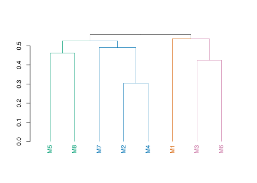
# thought - merge on latent projection of shared nodes only?
ng_counts <-
all_node_groups_aggregated_metrics |>
count(node_group)
gcm_projection_merge <- function(model_list, shared_nodes = NULL,
additional_nodes = NULL) {
# merges the latent projection of a list of models
# each model is projected onto the shared set of nodes,
# with the other nodes being treated as latent
if (is.null(shared_nodes)) {
shared_nodes <-
model_list |>
map(
\(m)
gcm_nodelist(m) |>
pull(name)
) |>
reduce(intersect)
}
if (!is.null(additional_nodes)) {
shared_nodes <- union(shared_nodes, additional_nodes)
}
merged_projections <-
model_list |>
map(
\(m)
gcm_projection(
m,
latent_nodes =
setdiff(gcm_nodelist(m, as_tibble = FALSE),
shared_nodes)) |>
activate(edges)
# |>
# mutate(edge_w = replace_na(edge_w, 1)) |>
# activate(nodes)
) |>
reduce(gcm_merge) |>
gcm_split_types() |>
activate(edges) |>
mutate(path_type = case_when(
str_detect(type, "<->") ~ "confound",
type =="->" ~ "causal",
type =="<-" ~ "causal"
))
return(merged_projections)
}Looking at 3 clusters of causally similar models, and plotting a merging of their latent projections using their shared node group clusters.
plot_latent_clusters_merged <- function(indexes,
nl = NULL,
additional_nodes = NULL,
...) {
CDAG.projection <-
CDAGs[indexes] |>
gcm_projection_merge(
shared_nodes = nl,
additional_nodes = additional_nodes)
CDAG.projection |>
g_plot_coarse(...) +
ggtitle(str_c(
"Merged latent projection of: ",
str_c("M", indexes, collapse = ", ")))
}
most_common_ngs <- all_node_groups_aggregated_metrics |>
count(node_group) |>
filter(n > 2) |>
pull(node_group)The latent projection of all models is relatively uninformative:
plot_latent_clusters_merged(1:8, label = T)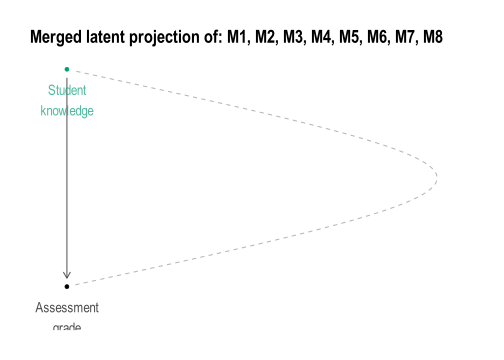
Assisted by the clustering there is a natural way to partition the models:
grouped_cdags <- list(
C1plus2 = list(
name = "metacognition-and-misuse",
models = c(5,8, 2,4,7),
description = "Exploring student metacognition skil and misuse of AI",
colour = "#008595"
),
C1 = list(
name = "help-confounds--metacog-mediates",
models = c(5,8),
description = "Each help (tutor, AI, AI misuse) similarily influences student knowledge, and grade, mediated through metacognitive skill.",
colour = "#009E73"
),
C2 = list(
name = "actions-leave-traces--metacog-skill-defends-AI-misuse",
models = c(2, 4, 7),
description = "Student actions leacing traces in LMS, lower metacognitive skill drives Misuse of AI.",
colour = "#0072B2"
),
C2a = list(
name = "actions-leave-traces--metacog-skill-defends-AI-misuse",
models = c(2, 4),
description = "Student actions leacing traces in LMS, lower metacognitive skill drives Misuse of AI.",
colour = "#5572B2"
),
C3 = list(
name = "course-design-and-teacher-capabilities",
models = c(1),
description = "Focused on course design, teacher capabilities. Did not identify knowledge to grade confounding.",
colour = "#D55E00"
),
C4 = list(
name = "knowledge-action-feedback--hidden-misuse-confounding",
models = c(3, 6),
description = "Ongoing feedback between student actions and knowledge, hidden confounding between AI use and grades.",
colour = "#CC79A7"
)
)
grouped_cdags |>
map(as_tibble) |>
list_rbind() |>
select(-colour) |>
group_by(name, description) |>
summarise(models = str_c(models, collapse = "; ")) |>
mutate(name = name |>
str_replace("--", ";\n") |>
str_replace_all("-", " ")) |>
mutate(description = str_wrap(description, width = 50)) |>
knitr::kable()| name | description | models |
|---|---|---|
| actions leave traces; | ||
| metacog skill defends AI misuse | Student actions leacing traces in LMS, lower | |
| metacognitive skill drives Misuse of AI. | 2; 4; 7; 2; 4 | |
| course design and teacher capabilities | Focused on course design, teacher capabilities. | |
| Did not identify knowledge to grade confounding. | 1 | |
| help confounds; | ||
| metacog mediates | Each help (tutor, AI, AI misuse) similarily |
influences student knowledge, and grade, mediated through metacognitive skill. |5; 8 | |knowledge action feedback; hidden misuse confounding |Ongoing feedback between student actions and knowledge, hidden confounding between AI use and grades. |3; 6 | |metacognition and misuse |Exploring student metacognition skil and misuse of AI |5; 8; 2; 4; 7 |
grouped_cdags |>
map(
\(l)
plot_latent_clusters_merged(l$models, label = TRUE)
)$C1plus2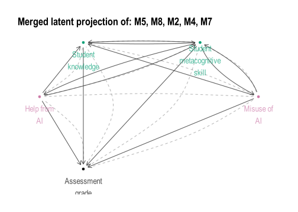
$C1
$C2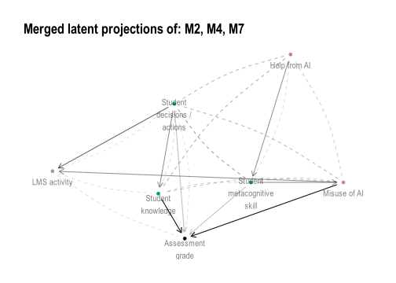
$C2a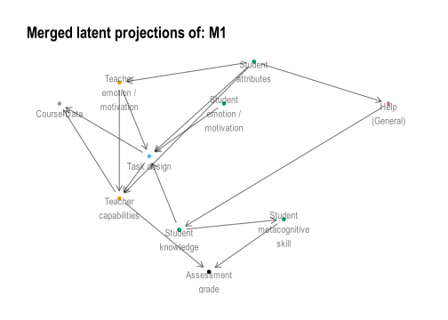
$C3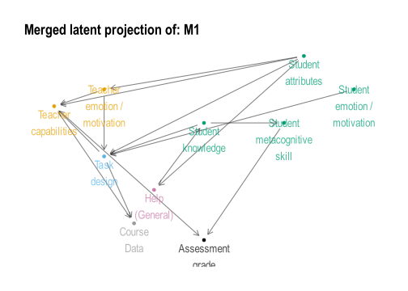
$C4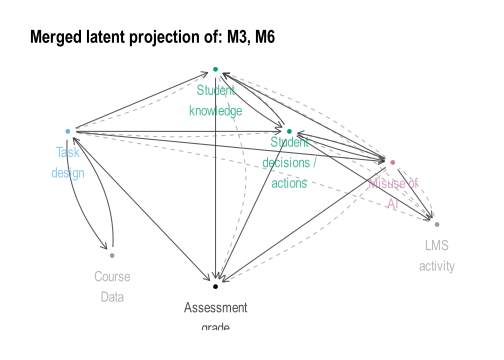
save_latent_merged_cdag_rect_plot <- function(l, ...) {
p <- plot_latent_clusters_merged(l$models, ...) +
ggtitle("") +
coord_equal()+
theme(
panel.border = element_rect(
colour = l$colour, fill = NA, linewidth = 1))
ggsave(
str_c("figures/projCDAG-", l$name,".png"),
plot = p,
width = 4, height = 4,
units = "in")
}
grouped_cdags |>
map(save_latent_merged_cdag_rect_plot)$C1plus2
[1] "figures/projCDAG-metacognition-and-misuse.png"
$C1
[1] "figures/projCDAG-help-confounds--metacog-mediates.png"
$C2
[1] "figures/projCDAG-actions-leave-traces--metacog-skill-defends-AI-misuse.png"
$C2a
[1] "figures/projCDAG-actions-leave-traces--metacog-skill-defends-AI-misuse.png"
$C3
[1] "figures/projCDAG-course-design-and-teacher-capabilities.png"
$C4
[1] "figures/projCDAG-knowledge-action-feedback--hidden-misuse-confounding.png"pg1 <- plot_latent_clusters_merged(
grouped_cdags$C1plus2$models, label = T) +
scale_y_continuous(limits = c(-1, 10))+
# scale_y_continuous(limits = c(-0.5, 10))+
theme(
panel.border = element_rect(
colour = grouped_cdags$C1plus2$colour,
fill = NA,
linewidth = 2)) +
ggtitle("")
pg1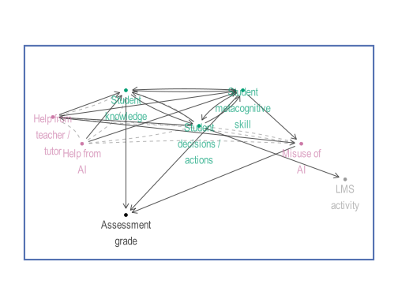
ggsave(
str_c("figures/projCDAG-labelled-", grouped_cdags$C1plus2$name,".png"),
plot = pg1,
width = 6, height = 4,
units = "in")pg2 <- plot_latent_clusters_merged(
grouped_cdags$C4$models, label = T) +
scale_y_continuous(limits = c(-1, 10)) +
theme(
panel.border = element_rect(
colour = grouped_cdags$C4$colour,
fill = NA,
linewidth = 2)) +
ggtitle("")
pg2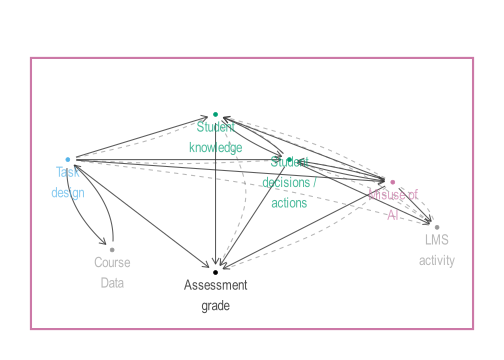
ggsave(
str_c("figures/projCDAG-labelled-", grouped_cdags$C4$name,".png"),
plot = pg2,
width = 6, height = 4,
units = "in")plot_latent_clusters_merged(
grouped_cdags$C3$models, label = T) +
scale_y_continuous(limits = c(-0.5, 12)) +
theme(
panel.border = element_rect(
colour = grouped_cdags$C3$colour, fill = NA, linewidth = 2))
Now we examine the feasibility of learning these models from data. A typical counter to going to the effort of eliciting these models from domain experts is that they can be learned from the data alone. However, we have seen here that much of the data is not present in the institutions ecosystem, with the nodes being deemed inherently latent (25.2%), potentially observable (41.5%), observable but not currently in the data (17.9%), or already measured and stored in the current data ecosystem (15.4%).
Examining at a coarser grained level by looking at the node group cluster graphs, we still see that a majority of node groups fall into difficult to measure categories:
node_groups_table |>
janitor::tabyl(measurability) |>
janitor::adorn_pct_formatting() |>
arrange(measurability) measurability n percent
Latent 8 32.0%
Likely latent 0 0.0%
Potentially observable 10 40.0%
Likely observable 0 0.0%
Observable 7 28.0%We design this experiment as follows. We ask the question can a causal graph discovered from available data generate similar answers to the problem of assuring assessment? This translates to getting an unbiased estimate of Student Knowledge on Grade. As such 3 of the models are excluded, lacking sufficient adjustment sets (2 models) or having broken student knowledge into multiple nodes (1 model). For the “potentially observable” nodes a single descendant node is added, so that \(N \rightarrow N_P\), a proxy measurement node that is not the exact node measured but whose value depends only on the potentially observable node and some additional noise. The set of proxy nodes for the potentially observable (\(PO\)) nodes we denote (\(\hat{PO}\)). Each of the 5 remaining GCMs, with their additional proxy measurement nodes, is used to generate a synthetic data set. We assuming each node has an equal linear effect on its descendants (\(\beta=0.4\)), generated using simulateSEM of the dagitty package in R. This treats all variables as continuous with mean 0 and variance 1.
sim_signal_strength <- list(
"idyllic" = 0.9,
"typical" = 0.4,
"noisy" = 0.1)
tibble(Scenario = names(sim_signal_strength),
Beta = as.numeric(sim_signal_strength)) |>
mutate(
`Variance due to each parent node` = Beta^2 / (1 + Beta^2)
) |>
knitr::kable(digits = 3)| Scenario | Beta | Variance due to each parent node |
|---|---|---|
| idyllic | 0.9 | 0.448 |
| typical | 0.4 | 0.138 |
| noisy | 0.1 | 0.010 |
We then apply a structure learning algorithm to each models simulated data in three phases: learning from the currently measured data only (only DW nodes), learning from all observable nodes (DW and O) nodes, and finally learning from all potentially available data (DW, O and \(\hat{PO}\)). This represents increasing levels of resourcing applied to learning the underlying causal structure, given the model.
Note we are working under a local assumption that each model is the ‘ground truth’, but fully acknowledge that we do not know for this system what the true model is. However, if the structure learning claims of application to discover latent nodes are to be believed (CITE) then we should see some reasonable convergence towards each locally true model.
# maybe use dagitty::simulateSEM() or dagitty::simulateLogistic()
# dagitty suggests using lavaan instead for SEM
# should add layout!!
# use same x, y from main graph
simSEM <- partial(simulateSEM, eps = 1, standardized = F, N = 1000)
# simSEM <- partial(simulateLogistic, eps = 1, N = 1000)
bn_fit_simulations <- function(
dag, observable_nodes,
force_observable = c("Grade", "S.Kn"),
Beta = 0.4,
proxy_nodes = NULL, # not implemented. Add to observable but also add noise
proxy_noise_sd = NULL, # will use Beta if not specified
blacklist = tibble(
from = "Grade",
to = "S.Kn")) {
observable_nodes <- union(observable_nodes, force_observable)
# getting simulated data, and subsets
d.sim.sem <- simSEM(dag, b.default = Beta)
d.o <- as.data.frame(d.sim.sem |> select(all_of(observable_nodes)))
if (!is.null(proxy_nodes)) {
proxy_nodes <- setdiff(proxy_nodes, force_observable)
# adding in proxy nodes, with additional noise due to using proxy measurement
if (is.null(proxy_noise_sd)) proxy_noise_sd <- Beta
d.proxy <- as.data.frame(d.sim.sem |> select(all_of(proxy_nodes)))
d.proxy <- lapply(d.proxy, \(x) x + rnorm(length(x), 0, proxy_noise_sd))
}
# fitting BNets
bn.o = bnlearn::bn.fit(
bnlearn::hc(
d.o,
blacklist = blacklist), d.o)
bn.DAG.o <- bn_to_dagitty(bn.o)
if (!is.null(proxy_nodes)) {
d.opo <- bind_cols(d.o, d.proxy)
bn.opo = bnlearn::bn.fit(
bnlearn::hc(
d.opo,
blacklist = blacklist), d.opo)
bn.DAG.opo <- bn_to_dagitty(bn = bn.opo)
} else {
d.opo <- NULL
bn.opo <- NULL
bn.DAG.opo <- NULL
}
return( # returns a named list of simmed data and models
list(
simdata = d.sim.sem,
# Only observable nodes
simdata.o = d.o,
bn.o = bn.o,
bn.DAG.o = bn.DAG.o,
# Including Potentially Observable (PO), so ALL non-latent nodes
simdata.opo = d.opo,
bn.opo = bn.opo,
bn.DAG.opo = bn.DAG.opo
))
}
bn_to_dagitty <- function(bn) {
edges <- bnlearn::arcs(bn) |> as_tibble()
all_nodes <- bnlearn::nodes(bn)
edge_str <- if (nrow(edges) > 0)
str_c(edges$from, " -> ", edges$to, collapse = "; ") else ""
dagitty(str_c("dag{ ",
str_c(all_nodes, collapse = "; "),
if (nchar(edge_str)) str_c("; ", edge_str) else "",
" }"))
}
# Thinking of a simple dag X -> Y, we have
# Var(Y) = b^2 * Var(X) + Var(eps) -- eps is the noise, and here it is set to 1 by default
# then Var(Y) = b^2 + 1
# Since the R^2 is the ratio of the variance explained by X:
# R^2 = Var(explained) / Var(total)
# R^2 = b^2 / (b^2 + 1)
dagitty_to_bn <- function(dag) {
edges <- dagitty::edges(dag) |>
as_tibble() |>
filter(e == "->") |> # directed edges only, excludes bidirected
select(v, w) |>
rename(from = v, to = w)
nodes <- unique(c(edges$from, edges$to))
# Build empty network then set arcs
net <- bnlearn::empty.graph(nodes)
bnlearn::arcs(net) <- as.matrix(edges)
net
}
causal_estimate_over_all_adj_sets <- function(
dag, data, latent_nodes = NULL,
exposure = "S.Kn", outcome = "Grade",
x1_val = 1, x0_val = 0) {
# This estimates P(Grade|S.Kn, Adjustment Set) over all adjustment sets
# This will give a range of that the model suggests is the true effect
if (is.null(dag)) {
list(adjustment_set = NULL,
estimate = NULL,
std_error = NULL)
}
adj_sets <- adjustmentSets(
dag,
exposure = exposure, outcome = outcome,
type = "all")
if (!is.null(latent_nodes)) {
# remove any with latent nodes
adj_sets <- keep(adj_sets, \(x) !any(x %in% latent_nodes))
}
# Throw error if none!
estimate_per_set <- map(adj_sets, function(adj_set) {
if (length(adj_set) == 0) {
message("No adjustment needed - regress directly")
formula_str <- str_c(outcome, " ~ ", exposure)
} else {
formula_str <- str_c(outcome, " ~ ", exposure, " + ",
str_c(adj_set, collapse = " + "))
}
if (class(data[[1]]) == "factor") {
fit <- glm(as.formula(formula_str), data = data, family = binomial)
x1_data <- data |>
mutate({{exposure}} := factor(x1_val, levels = c(-1,1)))
x0_data <- data |>
mutate({{exposure}} := factor(x0_val, levels = c(-1,1)))
} else {
fit <- lm(as.formula(formula_str), data = data)
x1_data <- data |>
mutate({{exposure}} := x1_val)
x0_data <- data |>
mutate({{exposure}} := x0_val)
}
# Simulating for potential outcomes
y1_x1 <- predict(fit,
newdata = x1_data,
se.fit = TRUE)
y1_x0 <- predict(fit,
newdata = x0_data,
se.fit = TRUE)
preds.fit <- y1_x1$fit - y1_x0$fit
se1 <- sqrt(mean(y1_x1$se.fit^2))
se0 <- sqrt(mean(y1_x0$se.fit^2))
se <- max(se1, se0)
# X1 <- model.matrix(delete.response(terms(fit)), x1_data)
# X0 <- model.matrix(delete.response(terms(fit)), x0_data)
# d <- colMeans(X1 - X0)
# est <- drop(d %*% coef(fit))
# se <- sqrt(drop(t(d) %*% vcov(fit) %*% d))
list(
y1_x0 = y1_x0,
y1_x1 = y1_x1,
mean = mean(preds.fit),
se = se)})
estimates <- map_dbl(estimate_per_set, "mean")
std_errors <- map_dbl(estimate_per_set, "se")
return(list(adjustment_set = adj_sets,
estimate = estimates,
std_error = std_errors))
}
#' Estimate a causal contrast under every valid adjustment set
#'
#' Returns, as before:
#' $adjustment_set list of adjustment sets (dagitty), after filtering
#' $estimate numeric vector, one per set, same order
#' $std_error numeric vector, one per set, same order
#'
#' All valid adjustment sets identify the same estimand, so under a CORRECT
#' graph the spread across sets is noise. Under a deliberately misspecified
#' graph it is a measure of structural disagreement - but a lower bound on
#' error, not error itself: sets can agree closely and all be biased the same
#' way. Compare against the known truth as well as across sets.
causal_estimate_over_all_adj_sets <- function(
dag, data,
latent_nodes = NULL,
exposure = "S.Kn",
outcome = "Grade",
x1_val = 1,
x0_val = 0,
type = "all",
max_sets = Inf) {
null_out <- list(adjustment_set = NULL, estimate = NULL, std_error = NULL)
if (is.null(dag)) return(null_out) # was missing its return()
stopifnot(exposure %in% names(data), outcome %in% names(data))
adj_sets <- dagitty::adjustmentSets(
dag, exposure = exposure, outcome = outcome,
type = type, max.results = max_sets
)
if (!is.null(latent_nodes))
adj_sets <- purrr::keep(adj_sets, \(s) !any(s %in% latent_nodes))
## covariates must actually be measured, else lm() errors
adj_sets <- purrr::keep(adj_sets, \(s) all(s %in% names(data)))
if (length(adj_sets) == 0) {
warning("no usable adjustment set for ", exposure, " -> ", outcome)
return(list(adjustment_set = adj_sets,
estimate = numeric(0), std_error = numeric(0)))
}
y <- data[[outcome]] # was data[[1]]
is_binom <- is.factor(y) || is.logical(y) ||
(is.numeric(y) && all(y %in% c(0, 1), na.rm = TRUE))
ex_lev <- if (is.factor(data[[exposure]])) levels(data[[exposure]]) else NULL
## levels taken from the data, so x0_val = 0 can't become NA
set_exposure <- function(d, v) {
d[[exposure]] <- if (is.null(ex_lev)) v else factor(v, levels = ex_lev)
d
}
estimate_per_set <- purrr::map(adj_sets, function(adj_set) {
rhs <- if (length(adj_set) == 0) exposure
else paste(c(exposure, adj_set), collapse = " + ")
fit <- if (is_binom)
stats::glm(stats::as.formula(paste(outcome, "~", rhs)),
data = data, family = stats::binomial)
else
stats::lm(stats::as.formula(paste(outcome, "~", rhs)), data = data)
tt <- stats::delete.response(stats::terms(fit))
X1 <- stats::model.matrix(tt, set_exposure(data, x1_val), xlev = fit$xlevels)
X0 <- stats::model.matrix(tt, set_exposure(data, x0_val), xlev = fit$xlevels)
b <- stats::coef(fit)
V <- stats::vcov(fit)
if (is_binom) {
## response scale (risk difference), delta-method SE
p1 <- stats::plogis(drop(X1 %*% b))
p0 <- stats::plogis(drop(X0 %*% b))
est <- mean(p1 - p0)
grad <- colMeans(X1 * (p1 * (1 - p1)) - X0 * (p0 * (1 - p0)))
} else {
grad <- colMeans(X1 - X0)
est <- drop(grad %*% b)
}
## SE of the contrast: both arms come from one fit, so the covariance
## between them must be kept, not dropped as in max(se1, se0)
list(mean = est,
se = sqrt(drop(t(grad) %*% V %*% grad)))
})
list(adjustment_set = adj_sets,
estimate = purrr::map_dbl(estimate_per_set, "mean"),
std_error = purrr::map_dbl(estimate_per_set, "se"))
}
generate_node_group_causal_estimate_comparisons <- function(
Model = "M5",
Beta = 0.4, # strength of signal along paths
# might need to change for different models depending on present nodes
exposure = "S.Kn", outcome = "Grade",
use_potential_observable_proxies = TRUE,
x1_val = 1, x0_val = 0, # should be 1 and 0 for continuous
# for placiing proxy nodes
x_p_nudge = 0, y_p_nudge = -2
) {
ground_truth_dag <-
CDAGs[[Model]] |>
tidygraph_to_dagitty()
obs_nds = CDAGs[[Model]]$observable
proxy_nds = CDAGs[[Model]] |>
activate(nodes) |>
as_tibble() |>
filter(measurability_node_group == "Potentially observable") |>
pull(name)
# Ground truth uses full simmed data
est <- partial(causal_estimate_over_all_adj_sets,
exposure = exposure, outcome = outcome,
x1_val = x1_val, x0_val = x0_val)
if (use_potential_observable_proxies) {
bn_list <- bn_fit_simulations(
dag = ground_truth_dag,
observable_nodes = obs_nds,
proxy_nodes = proxy_nds,
Beta = Beta)
obs_data <- bn_list$simdata.opo
learned_dag <- bn_list$bn.DAG.opo
} else {
bn_list <- bn_fit_simulations(
dag = ground_truth_dag,
observable_nodes = obs_nds,
Beta = Beta)
obs_data <- bn_list$simdata.o
learned_dag <- bn_list$bn.DAG.o
}
ground_truth <- est(
dag = ground_truth_dag,
data = bn_list$simdata)
expert_dag <- est(
dag = ground_truth_dag,
data = obs_data,
latent_nodes = setdiff(
names(ground_truth_dag),
names(obs_data)))
learned_dag <- est(
dag = learned_dag,
data = obs_data,
latent_nodes = setdiff(
names(learned_dag),
names(obs_data)))
estimates <- tibble(
Model = Model,
DAG = c(
"Ground Truth",
"Expert DAG",
"Learned DAG") |>
factor(levels = c(
"Ground Truth",
"Expert DAG",
"Learned DAG")),
exposure = exposure,
outcome = outcome,
adjustment_sets = list(
ground_truth$adjustment_set,
expert_dag$adjustment_set,
learned_dag$adjustment_set
),
estimate_mean = c(
mean(ground_truth$estimate),
mean(expert_dag$estimate),
mean(learned_dag$estimate)
),
estimate_std_errors = c(
mean(ground_truth$std_error),
mean(expert_dag$std_error),
mean(learned_dag$std_error)
),
estimate_sd = c(
sd(ground_truth$estimate),
sd(expert_dag$estimate),
sd(learned_dag$estimate)
)
)
message(str_c("Simulation complete for ", Model))
return( # Monster list of everything we need
list(
Model = Model,
DAG = ground_truth_dag,
fitted_BN = bn_list,
estimates = estimates
)
)
}dagitty and bnlearnif (rerun_simulations) {
simulations_ng_cluster_models <-
c("M1", "M2", "M3", "M4", "M5", "M6", "M7", "M8") |>
set_names() |>
imap(
\(M, n)
generate_node_group_causal_estimate_comparisons(
Model = M,
Beta = sim_signal_strength[["typical"]]
)
)
saveRDS(simulations_ng_cluster_models, "cache/model_simulations.RDS")
} else {
simulations_ng_cluster_models <- readRDS("cache/model_simulations.RDS")
}all_ng_estimates <-
map(
simulations_ng_cluster_models,
\(s)
s$estimates
) |>
list_rbind() |>
group_by(Model) |>
mutate(
gt_est_diff = estimate_mean - estimate_mean[DAG == "Ground Truth"] )|>
ungroup() |>
mutate(error = estimate_std_errors + replace_na(estimate_sd, 0)) |>
select(Model, DAG, estimate_mean, error, gt_est_diff, everything())ICD (Iterative Causal Discovery) learns a Partial Ancestry Graph (PAG), an equivalence class of Maximal Ancestry Graphs (MAGs), allowing for latent confounders and selection bias. This code is taken from https://github.com/IntelLabs/causality-lab/blob/main/notebooks/causal_discovery_with_latent_confounders.ipynb, with some AI translation into here. It is implemented only in Intel Labs’ causality-lab (Python), so this document runs it through reticulate and brings the learned graph back into R as an adjacency matrix.
Run this once in the console, not on every render.
library(reticulate)
virtualenv_create("icd", packages = c("numpy", "scipy"))
virtualenv_install("icd", "git+https://github.com/IntelLabs/causality-lab.git")causality-lab is not on PyPI, so it installs from the repo. If git+https is blocked, download the zip and point pip at the unpacked folder instead:
virtualenv_install("icd", "C:/path/to/causality-lab-main")library(reticulate)
use_virtualenv("icd", required = TRUE)import numpy as np
from causal_discovery_algs import LearnStructICD, LearnStructFCI
from causal_discovery_utils.cond_indep_tests import CondIndepParCorrsim_list is a named list of numeric matrices, names M1–M8. Rows are records, columns are variables. Models may have different numbers of columns — the node set is derived per matrix, so a shared vocabulary isn’t required.
sim_list <- simulations_ng_cluster_models |>
map(
\(sim)
sim$fitted_BN$simdata.opo
)
stopifnot(is.list(sim_list), !is.null(names(sim_list)))
sim_list <- lapply(sim_list, function(m) {
m <- as.matrix(m)
storage.mode(m) <- "double"
m
})
# keep column names on the R side; Python works in 0-based indices only
var_names <- lapply(sim_list, function(m) {
nm <- colnames(m)
if (is.null(nm)) paste0("V", seq_len(ncol(m))) else nm
})
alpha <- 0.01
data.frame(
model = names(sim_list),
records = vapply(sim_list, nrow, integer(1)),
nodes = vapply(sim_list, ncol, integer(1))
) model records nodes
M1 M1 1000 5
M2 M2 1000 7
M3 M3 1000 7
M4 M4 1000 8
M5 M5 1000 4
M6 M6 1000 9
M7 M7 1000 7
M8 M8 1000 7The loop runs inside Python so each matrix crosses the boundary once. A failure on one model is caught and recorded rather than aborting the render.
import numpy as np
from causal_discovery_algs import LearnStructICD, LearnStructFCI
from causal_discovery_utils.cond_indep_tests import CondIndepParCorr
def learn_one(mat, alpha=0.01, run_fci=True):
dataset = np.asarray(mat, dtype=float)
if dataset.ndim != 2 or dataset.shape[1] < 3:
raise ValueError(f"need a 2-D matrix with >=3 columns, got {dataset.shape}")
obs = set(range(dataset.shape[1])) # 0-based, matches column order
ci = CondIndepParCorr(dataset=dataset, threshold=alpha,
count_tests=True, use_cache=True)
icd = LearnStructICD(obs, ci)
icd.learn_structure()
out = {"adj_icd": icd.graph.get_adj_mat(),
"tests_icd": ci.test_counter,
"error": None}
if run_fci:
ci2 = CondIndepParCorr(dataset=dataset, threshold=alpha,
count_tests=True, use_cache=True)
fci = LearnStructFCI(obs, ci2)
fci.learn_structure()
out["adj_fci"] = fci.graph.get_adj_mat()
out["tests_fci"] = ci2.test_counter
return out
def learn_many(mats, alpha=0.01, run_fci=True):
res = {}
for name, mat in mats.items():
try:
res[name] = learn_one(mat, alpha, run_fci)
except Exception as e:
res[name] = {"adj_icd": None, "tests_icd": None,
"error": f"{type(e).__name__}: {e}"}
return resresults = learn_many(r.sim_list, alpha=r.alpha, run_fci=True)res <- py$results
res <- res[names(sim_list)] # dicts don't guarantee order; restore M1..M8
failed <- vapply(res, function(x) !is.null(x$error), logical(1))
if (any(failed)) {
message("failed: ", paste(names(res)[failed], collapse = ", "))
print(vapply(res[failed], function(x) x$error, character(1)))
}
adj_icd <- Map(function(x, nm) {
if (is.null(x$adj_icd)) return(NULL)
a <- x$adj_icd
dimnames(a) <- list(nm, nm)
a
}, res, var_names)
adj_fci <- Map(function(x, nm) {
if (is.null(x$adj_fci)) return(NULL)
a <- x$adj_fci
dimnames(a) <- list(nm, nm)
a
}, res, var_names)pag_edges <- function(adj, nodes = colnames(adj)) {
left <- c("1" = "o", "2" = "<", "3" = "-") # mark at the a-end, mirrored
right <- c("1" = "o", "2" = ">", "3" = "-") # mark at the b-end
p <- nrow(adj)
out <- list()
for (a in seq_len(p - 1)) {
for (b in (a + 1):p) {
if (adj[a, b] == 0 && adj[b, a] == 0) next
out[[length(out) + 1]] <- data.frame(
from = nodes[a],
to = nodes[b],
mark_from = left[[as.character(adj[b, a])]],
mark_to = right[[as.character(adj[a, b])]],
stringsAsFactors = FALSE
)
}
}
if (length(out) == 0) {
return(data.frame(from = character(), to = character(),
mark_from = character(), mark_to = character(),
edge = character()))
}
res <- do.call(rbind, out)
res$edge <- paste0(res$mark_from, "-", res$mark_to)
res
}
edges_icd <- lapply(adj_icd[!vapply(adj_icd, is.null, logical(1))], pag_edges)
# one long frame across models, if that suits the downstream comparison better
edges_all <- do.call(rbind, Map(function(e, nm) {
if (nrow(e) == 0) return(NULL)
cbind(model = nm, e)
}, edges_icd, names(edges_icd)))
rownames(edges_all) <- NULL
head(edges_all, 20) model from to mark_from mark_to edge
1 M1 CD.Str Grade o > o->
2 M1 CD.Str LD.Task < - <--
3 M1 CD.Str S.Att < > <->
4 M1 Grade LD.Task < o <-o
5 M1 Grade S.Att < o <-o
6 M1 Grade S.Kn < o <-o
7 M1 LD.Task S.Att < > <->
8 M1 LD.Task S.Kn < o <-o
9 M2 CD.LMS CD.Str o > o->
10 M2 CD.Str H.AI.good < > <->
11 M2 CD.Str S.Kn < > <->
12 M2 CD.Str H.AI.evil < > <->
13 M2 CD.Str LD.Gen - > -->
14 M2 Grade H.AI.good < > <->
15 M2 Grade S.Kn < - <--
16 M2 Grade H.AI.evil - > -->
17 M2 H.AI.good S.Kn < > <->
18 M2 S.Kn LD.Gen < > <->
19 M2 H.AI.evil LD.Gen < > <->
20 M3 CD.LMS Grade < > <->edge_summary <- function(e) {
types <- c("o-o", "o->", "<-o", "-->", "<--", "<->", "---")
counts <- table(factor(e$edge, levels = types))
c(n_edges = nrow(e), counts)
}
summ <- t(vapply(edges_icd, edge_summary, numeric(8)))
summ <- as.data.frame(summ)
summ$total_tests <- vapply(res[rownames(summ)],
function(x) sum(unlist(x$tests_icd)), numeric(1))
summ n_edges o-o o-> <-o --> <-- <-> --- total_tests
M1 8 0 1 4 0 1 2 0 54
M2 11 0 1 0 2 1 7 0 136
M3 11 1 1 4 0 1 4 0 124
M4 10 1 3 0 1 1 4 0 91
M5 3 0 0 3 0 0 0 0 15
M6 12 0 1 0 4 1 6 0 113
M7 9 0 0 1 1 3 4 0 81
M8 8 0 2 1 0 2 3 0 68Note <-o and <-- are the same edge types as o-> and --> with the endpoints swapped; they appear separately here only because pag_edges() fixes the column order by node index rather than by orientation.
test_counter runs to the largest conditioning set reached, which differs by model, so pad before binding.
pad <- function(x, n) c(x, rep(0, n - length(x)))
tests_icd <- lapply(res, function(x) unlist(x$tests_icd))
tests_icd <- tests_icd[!vapply(tests_icd, is.null, logical(1))]
maxlen <- max(vapply(tests_icd, length, integer(1)))
tests_mat <- t(vapply(tests_icd, pad, numeric(maxlen), n = maxlen))
colnames(tests_mat) <- seq_len(maxlen) - 1L
tests_mat 0 1 2 3 4 5 6 7
M1 10 27 13 4 0 0 0 0
M2 21 78 33 3 1 0 0 0
M3 21 54 19 18 10 2 0 0
M4 28 57 5 1 0 0 0 0
M5 6 6 3 0 0 0 0 0
M6 36 75 2 0 0 0 0 0
M7 21 51 6 2 1 0 0 0
M8 21 46 1 0 0 0 0 0matplot(seq_len(maxlen) - 1L, t(tests_mat), type = "b", pch = 1, lty = 1,
xlab = "conditioning set size", ylab = "number of CI tests")
legend("topright", rownames(tests_mat), col = seq_len(nrow(tests_mat)),
lty = 1, bty = "n", cex = 0.8)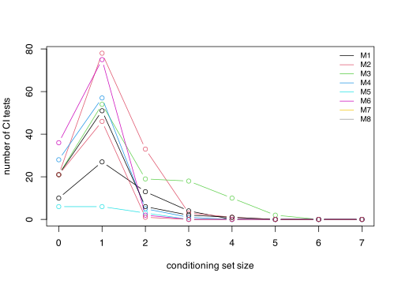
pag_to_dagitty <- function(e) {
f <- function(a, b, mf, mt) {
switch(paste0(mf, mt),
"oo" = sprintf("%s @-@ %s", a, b),
"o>" = sprintf("%s @-> %s", a, b),
"->" = sprintf("%s -> %s", a, b),
"<o" = sprintf("%s @-> %s", b, a), # flip so the circle leads
"<-" = sprintf("%s -> %s", b, a),
"<>" = sprintf("%s <-> %s", a, b),
"o-" = sprintf("%s @-- %s", a, b),
"-o" = sprintf("%s @-- %s", b, a),
"--" = sprintf("%s -- %s", a, b),
stop("unhandled edge: ", mf, mt)
)
}
stmts <- mapply(f, e$from, e$to, e$mark_from, e$mark_to, USE.NAMES = FALSE)
paste0("pag { ", paste(stmts, collapse = "; "), " }") |>
dagitty()
}
icd_PAGs <-
edges_icd |>
map(pag_to_dagitty)Using the ICD PAGs to run simulations
sim_from_pag <- function(Model = "M6") {
causal_estimate_over_all_adj_sets(
dag = icd_PAGs[[Model]],
data = simulations_ng_cluster_models[[Model]]$fitted_BN$simdata.opo
)
}
simulations_ng_PAGs <-
str_c("M",1:8) |>
set_names() |>
map(sim_from_pag)
PAG_ng_estimates <-
map(
simulations_ng_PAGs,
\(s)
tibble(
DAG = "Learned PAG",
exposure = "S.Kn",
outcome = "Grade",
adjustment_sets = list(s$adjustment_set),
estimate_mean = mean(s$estimate),
error = mean(s$std_error)
)
) |>
list_rbind(names_to = "Model")
all_simulation_estimates <-
bind_rows(all_ng_estimates, PAG_ng_estimates) Between Ground Truth, Expert DAGs, and Learned DAGs from observable data.
dodge_amt <- 0.1
ground_truth_estimate_mean_estimate <-
all_ng_estimates |>
filter(DAG == "Ground Truth") |>
filter(!is.nan(estimate_mean)) |>
pull(estimate_mean) |>
mean()
ground_truth_error_estimate <-
( # the largest base error
all_ng_estimates |>
filter(DAG == "Ground Truth") |>
filter(!is.nan(error)) |>
pull(error) |>
max())
est_to_plot <-
all_simulation_estimates |>
mutate(estimated_ground_truth = is.nan(estimate_mean)) |>
mutate(
estimate_mean = if_else(is.nan(estimate_mean) & DAG == "Ground Truth",
ground_truth_estimate_mean_estimate,
estimate_mean),
error = if_else(is.nan(error) & DAG == "Ground Truth",
ground_truth_error_estimate,
error)
) |>
group_by(Model) |>
mutate(
gt_est_diff = if_else(
is.nan(gt_est_diff) | is.na(gt_est_diff),
estimate_mean - estimate_mean[DAG == "Ground Truth"],
gt_est_diff
)
) |>
ungroup() |>
mutate(ogDAG = DAG) |>
mutate(DAG = if_else(estimated_ground_truth & DAG == "Ground Truth",
"Ground Truth (est)",
DAG) |>
factor(levels = c(
"Ground Truth",
"Ground Truth (est)",
"Expert DAG",
"Learned DAG",
"Learned PAG"
)))
pal_cols <- palette.colors()
pal_cols <- c(pal_cols[1], "#777777", pal_cols[2], pal_cols[3], pal_cols[4])# Would be nice to replicate this, but group
# models into those identifiable and those not
# Maybe change this to abs effect?
est_to_plot |>
filter(DAG != "Potentially Observable") |>
mutate(DAG = if_else(DAG == "Observable", "Learned DAG",
DAG) |>
factor(levels = c(
"Ground Truth",
"Ground Truth (est)",
"Expert DAG",
"Learned DAG",
"Learned PAG"
))) |>
mutate(
y_pos = as.numeric(factor(Model)) +
(as.numeric(factor(ogDAG)) - mean(as.numeric(factor(ogDAG)))) * dodge_amt
) |>
ggplot(aes(color = DAG, y = y_pos)) +
# geom_pointinterval(
# aes(x = gt_est_diff,
# xmin = gt_est_diff - 2 * error,
# xmax = gt_est_diff + 2 * error),
# alpha = 0.3, size = 1
# ) +
geom_pointinterval(
aes(x = estimate_mean,
xmin = estimate_mean - 1 *error,
xmax = estimate_mean + 1 *error),
alpha = 0.8, size = 3
) +
scale_y_continuous(
breaks = seq_along(levels(factor(est_to_plot$Model))),
labels = levels(factor(est_to_plot$Model)),
name = "Model"
) +
annotate("label", x = -0.0, y = c(2.2,3.2,5.2,6.2,8.2), label = "?",
color = pal_cols[3], alpha = 0.4) +
scale_colour_discrete(palette = pal_cols) +
xlab("Estimate") +
theme_minimal()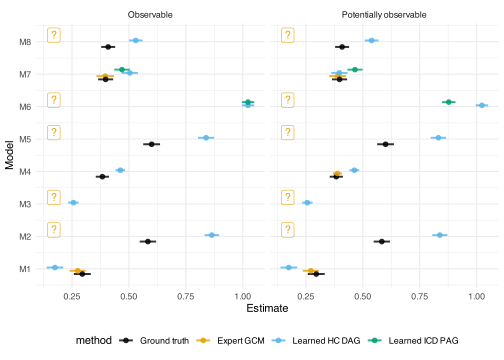
est_to_plot_grouped <-
est_to_plot |>
group_by(Model) |>
mutate(model_group = case_when(
any(DAG == "Ground Truth (est)") ~ "Unknowable models:\n",
is.nan(estimate_mean[DAG == "Expert DAG"]) ~ "Non-identifiable models\n(from potentially\nobservable data):\n",
TRUE ~ "Identifiable models\n(from potentially\nobservable data):\n"
)) |>
ungroup() |>
filter(DAG %in% c(
"Learned DAG",
"Learned PAG",
"Ground Truth",
"Expert DAG")) |>
group_by(model_group) |>
mutate(model_group_list = str_c(
unique(model_group),
str_c(unique(sort(Model)) , collapse = ", "))) |>
ungroup() |>
mutate(
y_pos = as.numeric(factor(model_group_list)) +
(as.numeric(factor(ogDAG)) - mean(as.numeric(factor(ogDAG)))) * dodge_amt
)
p.est.sims <-
est_to_plot_grouped |>
ggplot(aes(color = DAG, y = y_pos)) +
geom_pointinterval(
aes(x = gt_est_diff,
xmin = gt_est_diff - 1 *error,
xmax = gt_est_diff + 1 *error),
alpha = 0.6, size = 5
) +
scale_y_continuous(
breaks = seq_along(levels(factor(est_to_plot_grouped$model_group_list))),
labels = levels(factor(est_to_plot_grouped$model_group_list)),
name = "Model estimates"
) +
annotate("label", x = -0.0, y = c(1.8), label = "?",
color = pal_cols[3], alpha = 0.4) +
annotate("label", x = -0.0, y = c(2.8), label = "?",
color = pal_cols[3], alpha = 0.4) +
annotate("label", x = -0.0, y = c(3), label = "?",
color = "grey20", alpha = 0.4) +
scale_colour_discrete(palette = palette.colors()) +
xlab("Deviation from ground truth estimate (SD)") +
theme_minimal() +
theme(legend.position = "bottom")
p.est.sims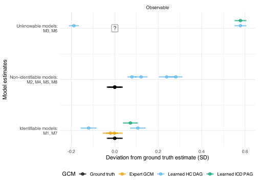
p.est.sims.2 <-
est_to_plot_grouped |>
filter(!str_detect(model_group_list, "Unk")) |>
ggplot(aes(color = DAG, y = y_pos)) +
geom_pointinterval(
aes(x = gt_est_diff,
xmin = gt_est_diff - 1 *error,
xmax = gt_est_diff + 1 *error),
alpha = 0.6, size = 5
) +
scale_y_continuous(
breaks = seq_along(levels(factor(est_to_plot_grouped$model_group_list))),
labels = levels(factor(est_to_plot_grouped$model_group_list)),
name = "Model estimates"
) +
annotate("label", x = -0.0, y = c(1.85), label = "?",
color = pal_cols[3], alpha = 0.4) +
scale_colour_discrete(palette = palette.colors()) +
xlab("Deviation from ground truth estimate (SD)") +
theme_minimal() +
theme(legend.position = "bottom")
p.est.sims.2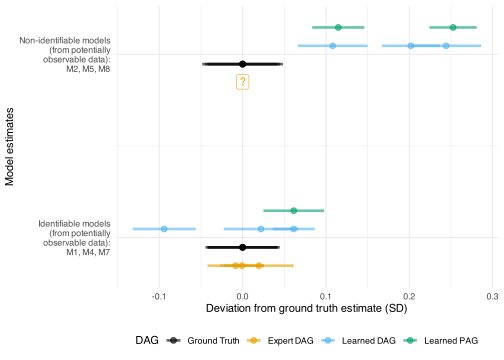
ggsave("figures/FIG--simulation-results.png", p.est.sims.2,
width = 10, height = 3)plot_bnlearn_coarse_comparison <- function(s_estimates) {
p_orig <- s_estimates$DAG |>
dag_to_tidy_graph() %N>%
mutate(name = str_remove(name, "_p$")) |>
gcm_cluster_graph(code_node_group) |>
g_plot_coarse()
x_limits <- layer_scales(p_orig)$x$get_limits()
y_limits <- layer_scales(p_orig)$y$get_limits()
p_opo <- s_estimates$fitted_BN$bn.opo |>
bn_to_dagitty() |>
dag_to_tidy_graph() %N>%
mutate(name = str_remove(name, "_p$")) |>
gcm_cluster_graph(code_node_group) |>
g_plot_coarse() +
xlim(x_limits) +
ylim(y_limits)
p_o <- s_estimates$fitted_BN$bn.o |>
bn_to_dagitty() |>
dag_to_tidy_graph() %N>%
mutate(name = str_remove(name, "_p$")) |>
gcm_cluster_graph(code_node_group) |>
g_plot_coarse() +
xlim(x_limits) +
ylim(y_limits)
return(list(
p_orig = p_orig,
p_opo = p_opo,
p_o = p_o))
}
pcomp_m1 <- plot_bnlearn_coarse_comparison(s_estimates = simulations_ng_cluster_models$M1)
pcomp_m1$p_orig / pcomp_m1$p_o +
ggtitle("Model 1: Actual coarsened DAG (top)
vs coarsened learned DAG from observable nodes")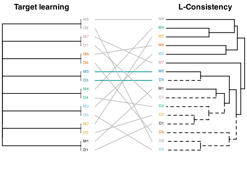
pcomp_m2 <- plot_bnlearn_coarse_comparison(s_estimates = simulations_ng_cluster_models$M2)
pcomp_m2$p_orig / pcomp_m2$p_o +
ggtitle("Model 2: Actual coarsened DAG (top)
vs coarsened learned DAG from observable nodes")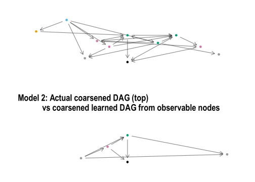
pcomp_m3 <- plot_bnlearn_coarse_comparison(s_estimates = simulations_ng_cluster_models$M3)
pcomp_m3$p_orig / pcomp_m3$p_o +
ggtitle("Model 3: Actual coarsened DAG (top)
vs coarsened learned DAG from observable nodes")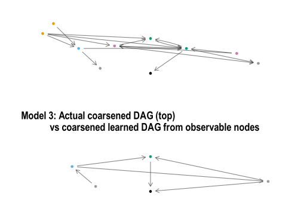
pcomp_m4 <- plot_bnlearn_coarse_comparison(s_estimates = simulations_ng_cluster_models$M4)
pcomp_m4$p_orig / pcomp_m4$p_o +
ggtitle("Model 4: Actual coarsened DAG (top)
vs coarsened learned DAG from observable nodes")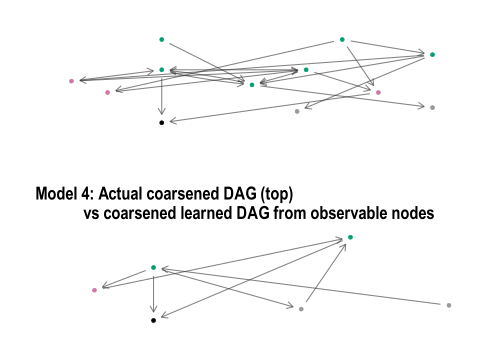
pcomp_m5 <- plot_bnlearn_coarse_comparison(
s_estimates = simulations_ng_cluster_models$M5)
pcomp_m5$p_orig / pcomp_m5$p_o +
ggtitle("Model 5: Actual coarsened DAG (top)
vs coarsened learned DAG from observable nodes")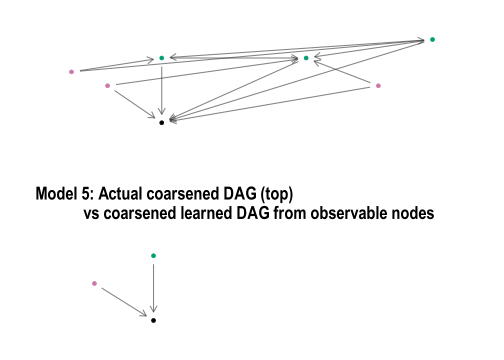
pcomp_m6 <- plot_bnlearn_coarse_comparison(
s_estimates = simulations_ng_cluster_models$M6)
pcomp_m6$p_orig / pcomp_m6$p_o +
ggtitle("Model 6: Actual coarsened DAG (top)
vs coarsened learned DAG from observable nodes")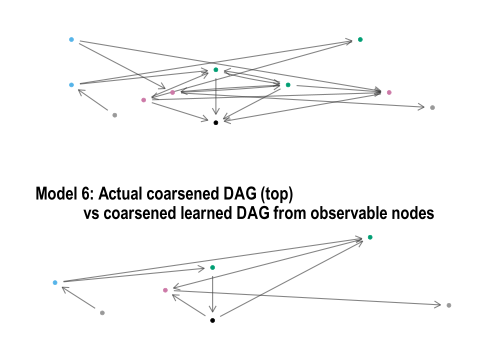
pcomp_m7 <- plot_bnlearn_coarse_comparison(
s_estimates = simulations_ng_cluster_models$M7)
pcomp_m7$p_orig / pcomp_m7$p_o +
ggtitle("Model 7: Actual coarsened DAG (top)
vs coarsened learned DAG from observable nodes")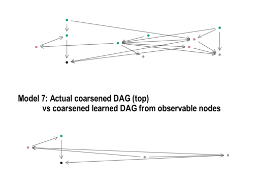
pcomp_m8 <- plot_bnlearn_coarse_comparison(
s_estimates = simulations_ng_cluster_models$M8)
pcomp_m8$p_orig / pcomp_m8$p_o +
ggtitle("Model 8: Actual coarsened DAG (top)
vs coarsened learned DAG from observable nodes")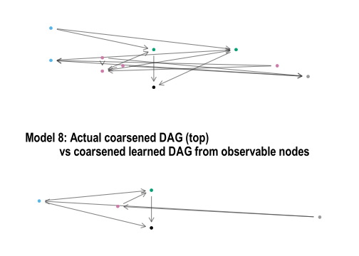
learned_CDAGs <-
simulations_ng_cluster_models |>
set_names(nm = str_replace(names(simulations_ng_cluster_models), "M", "D")) |>
imap(
\(est,m)
est$fitted_BN$bn.opo |>
bn_to_dagitty() |>
dagitty_to_tidygraph() |>
activate(nodes) |>
mutate(name = str_remove(name, "_p$"))
)
all_CDAGs <-
c(CDAGs, learned_CDAGs)if (recalculate_distance_matrices) {
all_L0_d_matrix <-
compute_dist_matrix(all_CDAGs, L0_d, symmetric = TRUE)
saveRDS(all_L0_d_matrix, "cache/all_L0_d_matrix.RDS")
} else {
all_L0_d_matrix <- readRDS("cache/all_L0_d_matrix.RDS")
}if (recalculate_distance_matrices) {
# Dist matrix
all_L1_d_matrix <-
compute_dist_matrix(
all_CDAGs,
.df = L1_d)
saveRDS(all_L1_d_matrix,
"cache/all_L1_d_matrix.RDS")
} else {
all_L1_d_matrix <- readRDS("cache/all_L1_d_matrix.RDS")
}# L2 distance between two models
if (recalculate_distance_matrices) {
# Dist matrix
all_L2_d_matrix <-
compute_dist_matrix(
all_CDAGs,
L2_d,
symmetric = TRUE)
saveRDS(all_L2_d_matrix,
"cache/all_L2_d_matrix.RDS")
} else {
all_L2_d_matrix <- readRDS("cache/all_L2_d_matrix.RDS")
}library(viridis)
L1_hclust_all <- hclust(as.dist(all_L1_d_matrix),
method = "average")
L2_hclust_all <- hclust(as.dist(all_L2_d_matrix),
method = "average")
dend_L12_all <- dendlist(
L1_hclust_all |> as.dendrogram() |> highlight_branches_col(rev(mako(100))[5:100]),
L2_hclust_all |> as.dendrogram() |> highlight_branches_col(rev(magma(100))[9:100])
)
tanglegram(dend_L12_all, main_left = "L1-consistency", main_right = "L2-consistency",
sort = TRUE, edge.lwd = 3, lwd = 2,
common_subtrees_color_lines = TRUE,
highlight_distinct_edges = FALSE)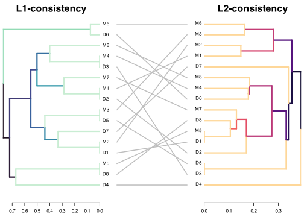
all_L12_dist_matrix <-
(all_L1_d_matrix + all_L2_d_matrix) / 2
L12_hclust_full <- hclust(
as.dist(all_L12_dist_matrix),
method = "average")
all_L012_dist_matrix <-
(all_L0_d_matrix + all_L1_d_matrix + all_L2_d_matrix) / 3
L012_hclust_full <- hclust(
as.dist(all_L012_dist_matrix),
method = "average")dend <-
L012_hclust_full |>
as.dendrogram()
lab <- labels(dend)
is_M <- substr(lab, 1, 1) == "M"
is_D <- substr(lab, 1, 1) == "D"
dend <- set(dend, "by_labels_branches_lty",
value = lab[is_D], TF_values = c(2, 1))
leaf_cols <- c(
"#000000", "#E69F00", "#56B4E9", "#009E73", "#0072B2", "#D55E00", "#CC79A7", "#999999","#F0E442")
num <- as.integer(sub("^\\D+", "", lab))
pal <- setNames(leaf_cols, 1:8)
labels_colors(dend) <- pal[as.character(num)]
png("figures/FIG--CDAGs-all-dendrogram.png",
width = 10, height = 4, units = "in", res = 300)
dend |>
hang.dendrogram(hang = 0.1) |>
plot(axes = F, horiz = F)
dev.off()svg
2 dend |>
hang.dendrogram(hang = 0.1) |>
plot(axes = F, horiz = F) 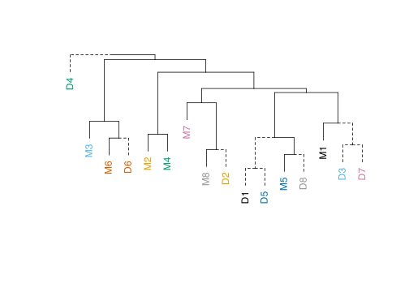
labels <- c(paste0("M", 1:8), paste0("D", 1:8))
nums <- as.integer(gsub("\\D", "", labels))
d_mat <- outer(nums, nums, function(a, b) as.numeric(a != b))
dimnames(d_mat) <- list(labels, labels)
d_pair <- as.dist(d_mat)
L_hclust_perfect_learn <- hclust(d_pair ,method = "complete")
dend_perfect <- L_hclust_perfect_learn |>
as.dendrogram()
labp <- labels(dend_perfect)
nump <- as.integer(sub("^\\D+", "", labp))
palp <- setNames(leaf_cols, 1:8)
labels_colors(dend_perfect) <- palp[as.character(nump)]
tanglegram(dend1 = dend_perfect,
dend2 = dend,
main_left = "Target learning", main_right = "L-dissimilarity",
sort = TRUE, edge.lwd = 2, lwd = 2,
common_subtrees_color_lines = TRUE,
highlight_distinct_edges = F,
axes = F,
rank_branches = F
)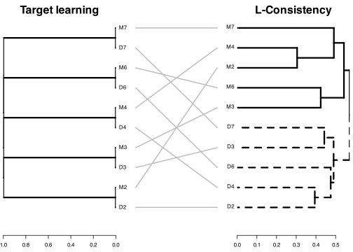
Highlighting all models in turn, original graph first and then CDAG.
if (export_and_save_every_model) {
p_fine_show_and_save(1)
p_coarse_show_and_save(1)
p_fine_show_and_save(2)
p_coarse_show_and_save(2)
p_fine_show_and_save(3)
p_coarse_show_and_save(3)
p_fine_show_and_save(4)
p_coarse_show_and_save(4)
p_fine_show_and_save(5)
p_coarse_show_and_save(5)
p_fine_show_and_save(6)
p_coarse_show_and_save(6)
p_fine_show_and_save(7)
p_coarse_show_and_save(7)
p_fine_show_and_save(8)
p_coarse_show_and_save(8)
} else {
print("Models saved in 'figures' folder, names beginning with 'plt--'")
}[1] "Models saved in 'figures' folder, names beginning with 'plt--'"https://arxiv.org/pdf/2201.06981 - follow up this paper On the Equivalence of Causal Models: A Category-Theoretic Approach Jun Otsuka JOTSUKA@BUN.KYOTO-U.AC.JP Philosophy Dept., Kyoto University, Kyoto, Japan. Hayato Saigo HARMONIAHAYATO@GMAIL.COM Dept. of Bioscience, Nagahama Institute of Bio-Science and Technology, Shiga, Japan.
Or from an earlier paper: > [DAG based] causal reasoning relies crucially on a delicate interplay between syntax and semantics, which is often not made explicit in the literature. The syntactic object of interest is the causal structure (e.g. a causal graph), which captures something about our understanding of the world, and the mechanisms which gave rise to some observed phenomena. The semantic object of interest is the data: joint and conditional probability distributions on some variables. Fixing a causal structure entails certain constraints on which probability distributions can arise, hence it is natural to see distributions satisfying those constraints as models of the syntax.
What if the semantic object is the expert?
There seems to be a good case for using string diagrams after the initial run of GCMing with domain experts. They are an incremental step in the formalisation process and have other affordances as well.
Is it possible that graph merging, coarsening, or L_i distance metrics are simpler in causal string diagrams than they are in causal DAGs?
Given a a mix of DAGs / CDAGs / coarsenings is there a way to represent both the fine grained structure and the coarse grained structure at the same time? For instance, an initial method might be having the fine-grain nodes sitting within a larger cluster node. However this still needs to have rules for how causal flow / influence moves between the lower and higher abstraction levels.
For instance, if we are given these two DAGs:
lwrDAG <- vnt.tdags$Fine1a |>
bind_nodes(tibble(name = "T", x = 1, y = -0.2, group = "T")) |>
bind_edges(
tibble(
from = c(1,6),
to = c(6,3),
type = rep("->",2))
)
hrDAG <- vnt.tdags$Cluster1W
lwrDAG |>
ggraph(layout = "manual", x = x, y = y)+
geom_edge_fan(
arrow = arrow(length = unit(4, 'mm'), type = "closed"),
start_cap = circle(6, 'mm'),
end_cap = circle(6, 'mm')) +
geom_node_point(aes(colour = group), size = 6) +
geom_node_text(aes(label = name), colour = "white", alpha = 0.9) +
scale_colour_manual(
values = first_letter_pal,
guide = "none") +
xlim(c(-0.1,2.1)) +
theme_graph() +
ggtitle("A model with fine-grained descriptions")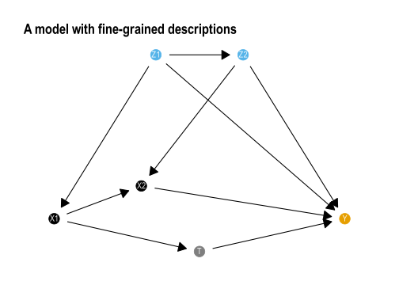
hrDAG |>
plot_vnt_dag() +
ggtitle("A cluster model that is in agreement, but broader scope")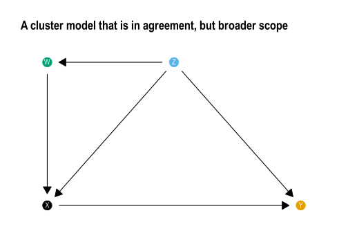
Can we represent both these fully? We see that \(Z \rightarrow W\), but do not know whether \(Z_1 \rightarrow W\), \(Z_2 \rightarrow W\), or both. There are similar challenges examining the path \(W \rightarrow X\).
mrgDag <-
gcm_merge(lwrDAG, hrDAG) |>
activate(nodes) |>
mutate(
x = case_when(
name == "X1" ~ x + 0.1,
TRUE ~ x
),
y = case_when(
name == "Z" ~ y + 0.2,
name == "X1" ~ y + 0.2,
TRUE ~ y
))
mrgDag |>
ggraph(layout = "manual", x = x, y = y)+
geom_edge_fan(
arrow = arrow(length = unit(4, 'mm'), type = "closed"),
start_cap = circle(6, 'mm'),
end_cap = circle(6, 'mm')) +
geom_node_point(aes(colour = group), size = 6) +
geom_node_text(aes(label = name), colour = "white", alpha = 0.9) +
scale_colour_manual(
values = first_letter_pal,
guide = "none") +
theme_graph()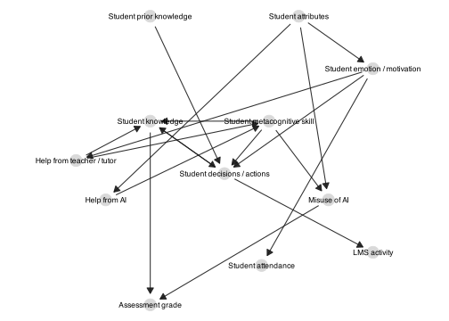
We can see that even if both models are regarded with high confidence we have some unanswered questions. For instance, is there a path from \(W\) to \(T\)?
A proposal:
-< edge, which is a little like a less than or subset sign, with the - end to the finer grained, lower level abstraction.-<). A change in the sub-component of a thing changes the whole.>- paths).The last point is the crux of the matter. Just because we influence the higher level construct does not tell us which sub-component is influenced. This (if no other information is available) would need to be a weaker flow of information, perhaps distributed across the sub-components (and maybe a noise parameter or something to represent that there are ‘all the other’ sub-components in the model). This could maybe work in a similar way to “conditioning on a decsendant” that partially controls for a variable.